Chapter 4 Prediction
4.1 Prediction, Classification and Clustering
The remainder of the paper is largely concerned with prediction, classification and clustering for large datasets. These are related problems.
In prediction, the aim is to estimate the value of a quantitative target variable using information from all other available variables (the predictors). For prediction we will have two datasets – a training set and a test set. For records in the training set we have the correct value of the target variable (or predictand16), so that these data can be used to construct a prediction methodology. The value of the target variable is unavailable (or is regarded as unavailable) in the test set, so our problem is to reconstruct these values.
In classification, we wish to use the predictor variables to assign each observation to one of a number of pre-specified classes. Again, we have training data, where the classes for each observation are known; and we have test data, where they the classes are unknown and hence need predicting. If one thinks of a qualitative target variable defining class membership for each observation, then the classification problem mirrors the prediction one exactly, except that the target is changed from quantitative to qualitative.
Clustering is akin to the classification in that the aim is to divide the observations into groups. However, in clustering these groups are not known a priori: it is like classification without the training dataset. We therefore seek to find natural groupings in the data without any prior information to guide us. In the computer science and machine learning literatures, classification and clustering are commonly referred to as supervised learning and unsupervised learning respectively.
How this chapter connects. This chapter introduces the main ideas behind prediction and shows how the different model families behave. For a modern implementation workflow built around reusable preprocessing, resampling, tuning, and final model fitting, see Chapter 5. In other words, this chapter is mainly about the methods; Chapter 5 is about putting them to work cleanly.
To illustrate these ideas, consider the following archaeological scenarios.
Archaeologist Dr Illinois Jane has found an incomplete fossilized skeleton of a Tyrannosaurus Rex. Dr Jane wishes to create replicas of the missing bones in order to display a full skeleton in her local museum. To do so, she must estimate the dimensions of the missing bones based on the bones that have been found. She has training data to help her, in the form of corresponding measurements taken from previously discovered complete Tyrannosaurus Rex skeletons
Dr Jane is faced with a number of prediction problems here, since she wants to predict quantitative target variables (the lengths, etc., of the missing bones).
On her next expedition, Dr Jane uncovers fossils from a number of sauropods17. She wants to know whether each fossilised dinosaur is a Brachiosaurus, or a Diplodocus, or an Apatosaurus, or none of these. This is classification problem, because the aim is to assign each fossilised dinosaur to one of four pre-specified classes. Training data are provided by measurements on Brachiosaurus, Diplodocus, Apatosaurus and other sauropod fossils from existing collections around the world.
On holiday in the north of Western Australia, Dr Jane discovers by chance a large number of fossilized fish. She has never before seen any fossils quite like these. There is quite a lot of variety in the fossils, so Dr Jane suspects that there are several species present. Using measurements taken on each fossil, she attempts to group them with the aim of distinguishing the different species that might be present. This is a clustering problem, because the goal is to form classes de novo.
In this chapter we will look at a variety of methods for prediction. These range from from methods based on explicit, easily interpretable models (in particular, linear regression) to computational black box techniques (like neural networks). Specifically, we will consider multiple linear regression; tree-based methods; and neural networks.
4.2 The Basics of Prediction
The classical prediction problem works as follows. We have two datasets. The first is the training data, where we have information on the predictor and target variables for each record. The second is a test dataset, where we know the values of the predictors, but not of the target variable. Our aim then is to predict the target variable on these test cases.
The basic approach will be to use the training data to construct a model that relates the target variable to the predictors. This model will have the predictors as ‘inputs’ and the target as an output, so that we can predict the test cases from the variables that we observe on them.
The challenge is to construct a good model for prediction! There are two issues here. First, we have to choose a particular type of model. For example we might use linear regression; we might use tree-based methods; we might use neural networks18. Then, when we have decided on an overall technique, we will need to tune the model. This might involve selecting which predictors to include and which to exclude, or choosing the size of a regression-tree, or selecting the complexity of a neural network.
It might seem tempting to compare the various modelling techniques and tuning parameters by seeing how well they reproduce the values of the target variables in the training set. However, this will give a false picture. Any model constructed from a given data set will tend to predict that dataset rather well – it’s like having home ground advantage in a sports match. However, the model will typically do less well when applied to the independent test dataset.
One resolution is to split the training data into two or more subsets, one of which becomes the new training set, and the other other(s) become validation and/or (artificial) test sets. Now, if we construct our various models from just the records in the new training set, we then have the validation/artificial test sets as independent testing grounds. (Returning to the sporting analogy, predicting on these datasets will be playing away from home, since they were not used in model construction.) Moreover, we actually know the true values of the target variable on these sets, and can hence obtain an independent assessment of the accuracy of our predictions.
Once we have used the validation/artificial test sets dataset to choose the best model, it makes sense to recombine all the training data and refit the model before applying it to the real test dataset. For example, we might decide that the best type of model is a linear regression with a particular set of variables based on our artificial test data. We should then re-estimate the parameters of that model from the full training set before making predictions on the test cases.
In the notes that follow you will sometimes see test datasets where the target variable is present. This is for illustrative purposes. If we do know the target variable, then we can compute errors in prediction and hence provide comparisons between methods. However, do keep in mind that in real-world prediction, the aim will be to predict on test cases without the target present. Learn to do this well and a lucrative career in anything from financial forecasting to sports betting to weather forecasting might lie ahead of you!
4.3 Linear Regression for Prediction
4.3.1 Data Structures and Notation
Linear regression is a very large topic, the theory and practice of which could occupy several university courses19. Here we will restrict ourselves to a brief overview, focusing on the use of linear regression models for prediction.
We will seek to construct our regression models from the training data, and will then apply these models to obtain predictions on the test data. For the training data, one of the observed variables (or attributes) will be the target; denote this by \(y\). This variable is typically referred to as the response in the context of regression modelling. The remaining variables in the training data set (which are also the variables available in the test data) are known as the predictors, and will be denoted \(x_1, x_2, \ldots, x_p\).
Example 4.1 Prediction for Wage Data
This example is concerned with data on workers in the U.S., collected in the late 1980s. For each worker the following attributes are recorded.
| Attribute | Definition |
|---|---|
EDU |
Number of years of education |
SOUTH |
Indicator variable for living in Southern Region (\(1=\)yes, \(0=\)no) |
SEX |
F (female) or M (male) |
EXP |
Number of years of work experience |
UNION |
Union member? (\(1=\)yes, \(0=\)no) |
WAGE |
Hourly wage (in dollars) |
AGE |
Age in years |
RACE |
Ethnicity (Hispanic, Other, or White) |
OCCUP |
Occupation category (Clerical, Management, Other, Sales, Professional, Service) |
SECTOR |
Employment sector (Construction, Manufacturing, or Other) |
MARRIED |
Married? (no or yes) |
The target variable (predictand) is WAGE (i.e. this is the variable
that we generically denote \(y\)). The other attributes are the predictors
(generically denoted \(x_1, x_2, \ldots, x_{p}\), where \(p=10\) is the
number of them). Notice that some of these predictors are numerical
variables (e.g. EDU, AGE) and some are categorical (e.g. SEX,
OCCUP).
The training set comprises data on 400 employees, which can be downloaded into R by
A test dataset of 134 observations is also available, which can be downloaded into R by
Notice that in this case the we actually have the values for the target
WAGE in the test data. This artificial situation means we can use the
test dataset to assess the performance of the prediction methodology
(since we know the true answer in each case).
4.3.2 The Linear Regression Model
The multiple linear regression model20 expresses the target variable as a linear combination of the predictors. That is,
\[\begin{align} y_i &= \beta_0 + \beta_1 x_{i1} + \beta_{2} x_{i2} + \cdots + \beta_p x_{ip} + \varepsilon_i \\ &= \beta_0 + \sum_{j=1}^p \beta_j x_{ij} + \varepsilon_i\qquad(i=1,2,\ldots,n)\\ \tag{4.1}\end{align}\]
where
\(y_i\) is the value of the target variable for the \(i\)th observation in the training set.
\(x_{ij}\) is the value of \(j\)th predictor for the \(i\)th observation in the training set.
\(\varepsilon_1, \ldots \varepsilon_n\) are random error terms, usually assumed to be independent \(N(0,\sigma^2)\) random variables21.
The coefficients \(\beta_0, \beta_1, \ldots, \beta_p\) are unknown regression parameters, that must be estimated in practice.
You may have already spotted a problem with the model described in
equation (4.1) (particularly if you have studied linear
regression models previously). The model formulation is appropriate for
numerical predictors, but what about factors (i.e. categorical predictor
variables)? The answer is that we can replace each factor by a set of
dummy (indicator) variables. These are binary variables (i.e. taking
value zero or one), and can be used to code each level of each factor.
For instance, the variable SEX from the previous Example can be
replaced by two indicator variables, MALE and FEMALE (say), where
MALE is 1 for each male and 0 otherwise, and FEMALE takes the value
0 for each male and 1 for each female. Similarly, we could code
ethnicity using binary indicator variables for ‘Other’, ‘Hispanic’ and
‘White’ categories22. It follows that we the regression model in
equation (4.1) is appropriate once we have coded each factor in
terms of numerical (binary) indicators23.
It is important to recognize that the multiple linear regression model makes some rather strong assumptions. We have already noted assumptions about the error terms in equation (4.1). However, even more important is the implicit assumption that the relationship between the target variable and the predictors is linear. There are ways of relaxing this assumption somewhat (for example, using polynomial regression), but we shall not pursue these here. Rather, we will look later at methods that allow far more flexible relationships between the response and the predictors.
4.3.3 Fitting Linear Regression Models
In order to apply regression models in practice we must estimate the parameters \(\beta_0, \beta_1, \ldots, \beta_p\). This is referred to as ‘fitting the model’. This can be done using the method of least squares, whereby we select the values \(\hat \beta_0, \hat \beta_1, \ldots, \hat \beta_p\) that minimize the sum of squares
\[\begin{equation} SS(\beta_0, \beta_1, \ldots, \beta_p) = \sum_{i=1}^n \left ( y_i - \beta_0 - \beta_1 x_{i1} - \beta_{2} x_{i2} - \cdots - \beta_p x_{ip} \right )^2. \tag{4.2}\end{equation}\]
The minimizers \(\hat \beta_0, \hat \beta_1, \ldots, \hat \beta_p\) are called least squares estimates of the parameters. The minimum value of the \(SS\) (i.e. the value of \(SS\) when the parameters are set to the least squares estimates) is called the residual sum of squares, frequently abbreviated to RSS. Hence
\[\begin{equation} {\textsf {RSS}}= \sum_{i=1}^n ( y_i - \hat \beta_0 - \hat \beta_1 x_{i1} - \hat \beta_{2} x_{i2} - \cdots - \hat \beta_p x_{ip} )^2. \tag{4.3}\end{equation}\]
Regression models can be fitted in R using the lm function24. The
basic syntax is
where
formulais the model formula (a required argument)datais the data frame in use (optional).
A fitted model can be assigned to a fitted model object for later use (as illustrated a little further below).
If the target variable is stored as the object y in R, and there are
two predictor variables stored as x1, x2, then the aforementioned
model formula will be
The number 1 on the right hand side of the formula tells R that you
want to include an intercept (i.e. a \(\hat \beta_0\)) term in your model.
In fact you can omit the 1 + from the formula since R includes an
intercept by default, but some people like to include it for aesthetic
reasons. If you want to fit a regression through the origin, then the
model is specified by y ~ -1 + x.
R will look first in the data frame argument to lm (if provided) when
searching for the variables in a model formula. It will then look in the
user’s workspace. In general, it is recommended that you do supply a
data frame argument to lm in order to avoid confusion between common
variable names in different datasets.
One very useful convention in R model formulae is that a dot on the
right-hand side of the formula represents all variables in the data
frame excluding the target. For instance, if the data frame my.df
contains variables y, x1 and x2, then
and
produce identical fitted models, saved as my.lm and my.lm2
respectively in the above code.
Example 4.2 Regression Modelling for the Wage Data
In this example we fit a regression model to the training data from the wage dataset.
#>
#> Call:
#> lm(formula = WAGE ~ ., data = wage.train)
#>
#> Residuals:
#> Min 1Q Median 3Q Max
#> -10.517 -2.251 -0.491 1.711 34.314
#>
#> Coefficients:
#> Estimate Std. Error t value Pr(>|t|)
#> (Intercept) -0.08843 6.67921 -0.013 0.98944
#> EDU 0.80550 1.06299 0.758 0.44906
#> SOUTH -0.59829 0.46847 -1.277 0.20233
#> SEXM 1.76563 0.47176 3.743 0.00021 ***
#> EXP 0.26571 1.05648 0.252 0.80156
#> UNION 1.57952 0.57570 2.744 0.00636 **
#> AGE -0.18206 1.05542 -0.172 0.86314
#> RACEOther -0.27022 1.08367 -0.249 0.80322
#> RACEWhite 0.64714 0.94797 0.683 0.49523
#> OCCUPManagement 3.69919 0.83060 4.454 1.11e-05 ***
#> OCCUPOther -0.63296 0.79143 -0.800 0.42434
#> OCCUPProfessional 1.62208 0.75193 2.157 0.03161 *
#> OCCUPSales -1.23499 0.93477 -1.321 0.18723
#> OCCUPService -0.45767 0.73144 -0.626 0.53187
#> SECTORManufacturing -0.25052 1.16225 -0.216 0.82945
#> SECTOROther -1.79173 1.12877 -1.587 0.11326
#> MARRIEDYes 0.05904 0.47013 0.126 0.90013
#> ---
#> Signif. codes: 0 '***' 0.001 '**' 0.01 '*' 0.05 '.' 0.1 ' ' 1
#>
#> Residual standard error: 4.166 on 383 degrees of freedom
#> Multiple R-squared: 0.3317, Adjusted R-squared: 0.3038
#> F-statistic: 11.88 on 16 and 383 DF, p-value: < 2.2e-16Some comments on this R snippet.
The first line of code fits a linear model with
WAGEas the response (target) and all other variables in the data framewage.trainas predictors. The resulting fitted model is saved as the objectwage.lm. (There is no requirement to use a name of the formsomething.lmfor the fitted model, but such a naming convention can be helpful when it comes to remembering the attributes of each of the objects in your workspace.)The presence of a row of dots in the R snippet indicates that we have deleted some non-essential output.
The
summaryfunction attempts to provide a summary of whatever type of object it is applied to. For linear models we get a generic type of table of regression coefficients. This table includes the estimated coefficients themselves (i.e. \(\hat \beta_0, \ldots, \hat \beta_p\)); their standard errors; and t-values and corresponding p-values for testing whether the associated coefficient is different from zero. A small p-value (usually interpreted as one less than \(0.05\)) indicates that there is statistically significant evidence that the corresponding coefficient is not zero. (This is highlighted using stars – the more stars, the stronger the evidence that the coefficient is non-zero.)The interpretation of p-values for individual regression terms is quite subtle25. For the purposes of the current paper it is sufficient to recognize that (highly) significant terms are providing important information about the response variable, and hence should be useful in generating predictions. Non-significant variables are not provide so much information (at least when all other variables have been taken into account), and hence may be adding noise to the prediction model as much as anything else.
Hence, in the current example we see that
Unionis a significant predictor ofWAGE.Unionis a binary variable with 1 indicating union membership and 0 indicating lack thereof. Given the positive coefficient forUnion, it appears that belonging to a union has a positive impact on a worker’s hourly wage (having adjusted for all the other predictors).
Example 4.3 Tidying the Linear Model for the Wage Data
In the previous example we used the summary() command to gain information from
the linear model. This combines information on the model equation (e.g. coefficients
and their standard errors) with information on the overall model fit (the
multiple \(R^2\), overall \(F\) statistic, residual degrees of freedom etc)
The broom package contains some tools to tidy the output from linear models
(and other models) in a consistent way. The two functions for summarising model
fit are tidy(), which produces a tidy data frame for the coefficients of the
model:
#> # A tibble: 17 × 5
#> term estimate std.error statistic p.value
#> <chr> <dbl> <dbl> <dbl> <dbl>
#> 1 (Intercept) -0.088428 6.6792 -0.013239 0.98944
#> 2 EDU 0.80550 1.0630 0.75777 0.44906
#> 3 SOUTH -0.59829 0.46847 -1.2771 0.20233
#> 4 SEXM 1.7656 0.47176 3.7427 0.00020998
#> 5 EXP 0.26571 1.0565 0.25151 0.80156
#> 6 UNION 1.5795 0.57570 2.7437 0.0063614
#> 7 AGE -0.18206 1.0554 -0.17250 0.86314
#> 8 RACEOther -0.27022 1.0837 -0.24935 0.80322
#> 9 RACEWhite 0.64714 0.94797 0.68266 0.49523
#> 10 OCCUPManagement 3.6992 0.83060 4.4536 0.000011093
#> 11 OCCUPOther -0.63296 0.79143 -0.79976 0.42434
#> 12 OCCUPProfessional 1.6221 0.75193 2.1572 0.031609
#> 13 OCCUPSales -1.2350 0.93477 -1.3212 0.18723
#> 14 OCCUPService -0.45767 0.73144 -0.62572 0.53187
#> 15 SECTORManufacturing -0.25052 1.1623 -0.21555 0.82945
#> 16 SECTOROther -1.7917 1.1288 -1.5873 0.11326
#> 17 MARRIEDYes 0.059039 0.47013 0.12558 0.90013And glance() which provides a single row data frame with summary statistics
of model fit:
#> # A tibble: 1 × 12
#> r.squared adj.r.squared sigma statistic p.value df logLik AIC
#> <dbl> <dbl> <dbl> <dbl> <dbl> <dbl> <dbl> <dbl>
#> 1 0.33174 0.30383 4.1656 11.883 3.0923e-25 16 -1129.6 2295.3
#> # ℹ 4 more variables: BIC <dbl>, deviance <dbl>, df.residual <int>, nobs <int>The nice thing about the glance output is you can use it directly as if it is
a list object, and use the $ operator (complete with tab auto-completion!)
#> [1] 0.33174384.3.4 Prediction
Regression models can be used for a variety of purposes. For example, their straightforward interpretability means that they can be employed to better understand the relationships between variables, and also to quantify the effects of predictors on the response. However, our primary interest here is in the use of these models for prediction.
Given estimates of the model parameters (obtained using the method of least squares) we can form the fitted model as
\[\begin{align} \hat y &= \hat \beta_0 + \hat \beta_1 x_{1} + \hat \beta_{2} x_{2} + \cdots + \hat \beta_p x_{p} \\ &= \hat \beta_0 + \sum_{j=1}^p \hat \beta_j x_{j}. \tag{4.4} \end{align}\]
We can hence obtain point predictions by substituting in requisite values for the predictors and then calculating the resulting value for \(\hat y\). We use the phrase ‘point predictions’ to emphasise that this procedure generates just a single prediction. Also useful are prediction intervals, which specify a range of values with an associated level of confidence.
Prediction for linear models in R can be carried out using the predict
command. The syntax for computing point predictions is as follows:
where my.lm is the fitted regression model to perform the prediction,
and my.test.predictors is a data frame containing (as rows) the sets
of predictors for which we wish to make predictions26. We can obtain
predictions intervals (in addition to the point predictions) by
By default the prediction interval will be at the 95% level (so that
there is probability 0.95 that each prediction interval will contain the
true target value, assuming that the model is adequate). This percentage
can be changed through the optional level argument to predict.
Example 4.4 Prediction for the Wage Data
Here we use the model fitted in the previous example to make predictions for the target variable (hourly wage) in the test data set.
#> fit lwr upr
#> 1 8.377106 -0.1071914 16.86140
#> 2 9.016646 0.6028001 17.43049
#> 3 8.499586 0.1763713 16.82280
#> 4 15.155114 6.6854034 23.62483
#> 5 8.152215 -0.2501431 16.55457
#> 6 10.610263 2.3114289 18.90910Unfortunately, this isn’t tidy - the output is not a data.frame, so we
can’t just pass this across to ggplot2 for plotting.
A better solution is to use augment() from the broom package. The nice thing
about broom is it provides a consistent interface across multiple model types,
it works not just for the lm() function but for many others. As the name
suggests, instead of just returning the prediction information, it augments
the data we supply with the predictions. The augmented columns all start with a
period (.).
wage.tidypred <- augment(wage.lm, newdata=wage.test, interval="prediction")
wage.tidypred |> select(starts_with("."), everything())#> # A tibble: 134 × 15
#> .fitted .lower .upper .resid EDU SOUTH SEX EXP UNION WAGE AGE
#> <dbl> <dbl> <dbl> <dbl> <dbl> <dbl> <chr> <dbl> <dbl> <dbl> <dbl>
#> 1 8.3771 -0.10719 16.861 -4.6271 11 0 M 11 0 3.75 28
#> 2 9.0166 0.60280 17.430 -1.0166 12 0 F 43 1 8 61
#> 3 8.4996 0.17637 16.823 -2.4996 13 1 M 7 0 6 26
#> 4 15.155 6.6854 23.625 7.6749 18 0 F 37 0 22.83 61
#> 5 8.1522 -0.25014 16.555 -3.0022 13 1 M 1 1 5.15 20
#> 6 10.610 2.3114 18.909 -4.4603 16 0 F 16 0 6.15 38
#> 7 6.9590 -1.3276 15.246 -3.9590 12 1 F 28 0 3 46
#> 8 11.641 3.0315 20.251 -6.6413 14 0 M 0 0 5 20
#> 9 11.561 3.2827 19.838 -1.7005 15 0 M 13 0 9.86 34
#> 10 13.685 5.2854 22.084 -7.4347 18 0 M 27 0 6.25 51
#> # ℹ 124 more rows
#> # ℹ 4 more variables: RACE <chr>, OCCUP <chr>, SECTOR <chr>, MARRIED <chr>As this is tidy, we can quite happily use ggplot2 to do plots, e.g. a plot
of the true target values (i.e. WAGE) against predictions (i.e. .fitted) based
on the linear model wage.lm:
ggplot(wage.tidypred) +
geom_point(mapping = aes(x=.fitted, y=WAGE)) +
labs(x="Predicted wage",
y="True wage")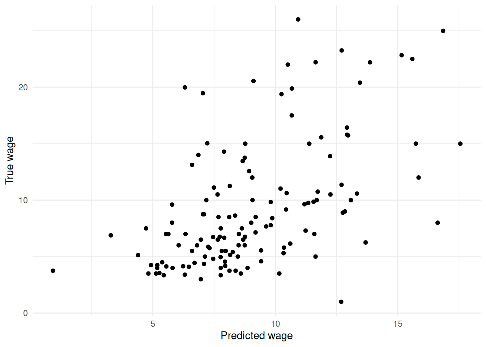
Figure 4.1: Scatterplot of true wages against predicted wages.
A second plot embellishes this by adding the range of 95% prediction intervals, as depicted by vertical lines for each observation in the test set.
ggplot(wage.tidypred) +
geom_linerange(mapping = aes(x=.fitted, ymin=.lower, ymax=.upper)) +
geom_point(mapping = aes(x=.fitted, y=WAGE), col='red') +
labs(x="Predicted wage",
y="True wage")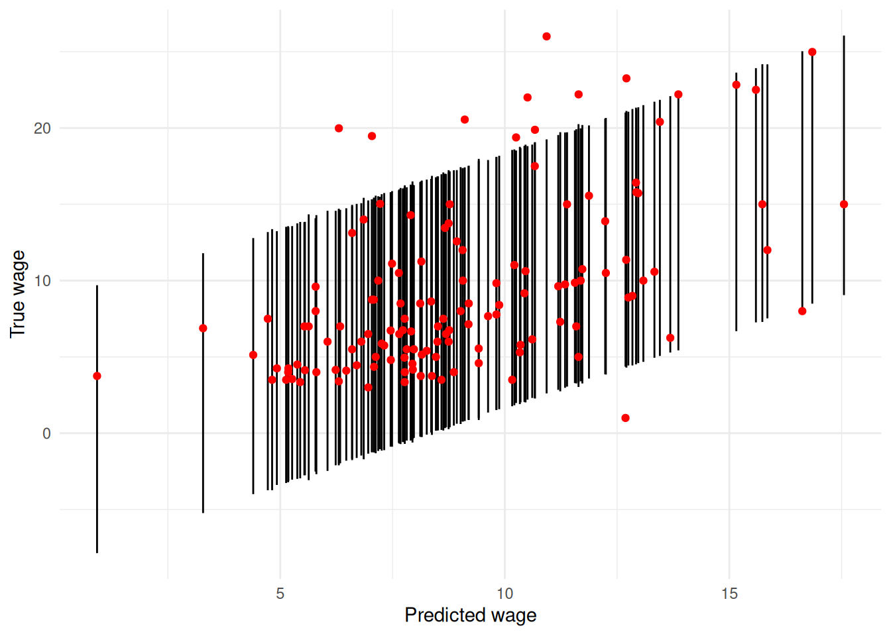
Figure 4.2: Scatterplot of true wages against predicted wages, with 95% prediction intervals depicted by vertical lines.
Some noteworthy points are as follows.
The
predictcommand saves the predictions in the objectwage.pred. Because we specified theintervalargument inpredict, the objectwage.predis a three column matrix. The first column contains the predictions themselves; the second and third columns are lower and upper bounds respectively for 95% prediction intervals. This is not tidy for plotting.The
augmentcommand gives us the same information by augmenting thewage.testdata with additional columns.fitted,.lower,.upperand.resid. These should be self-explanatory.The plotting command for the first Figure 4.1 requires no special comment, but the code to produce Figure 4.2 utilises the
geom_linerange()layer which you may not have seen before. This usesyminandymaxto draw line segments. There is alsogeom_pointrangeavailable that combines the line range and point geometries into one.Two things are strikingly clear from the Figures. First, the (point) predictions are not terribly impressive. If the regression model produced highly accurate predictions then the plot of true versus predicted values would lie more or less on a 45\(^\circ\) straight line. Instead we see considerable variation. Second, the prediction intervals are very wide, indicating a high degree of imprecision in the predictions. Consider, for example, that when the true value of
WAGEis about 8 dollars per hour, the prediction intervals range from about \(0\) to \(16\) dollars per hour.Of course, zero dollars per hour (or even slightly negative values in some cases) is nonsensical in the prediction interval, but reflects the dependence of linear regression models on their underlying assumptions (in this case the pertinent one being that the errors are normally distributed).
4.3.5 Prediction Accuracy and the Bias-Variance Trade-Off
Why are the predictions so variable in the previous Example? After all, we seem to have quite a lot of information available – 10 attributes on 400 individuals. However, how many of these variables are providing useful information for predicting the target variable? Inclusion of predictors that have very little association with the target will simply add noise to the prediction process.
This discussion suggests that we should try and identify the relatively uninformative predictors, and remove them from the model in order to reduce the noise in the system. However, we should be aware that deletion of any predictor that is related to the target (no matter how weak that relationship is) will introduce bias in the prediction process.
Consider a very simple example in which there are only two predictors, \(x_1\) and \(x_2\), where the first of these is strongly informative about the target \(y\), and the latter very weakly so. The model using both predictors is \[y = \beta_0 + \beta_1 x_1 + \beta_2 x_2 + \varepsilon\] Denote this model \(M_1\). Because the error term has zero mean, we can compute the mean (expected) value of the response variable as \[\begin{equation} {\textsf E}[y] = \beta_0 + \beta_1 x_1 + \beta_2 x_2. \tag{4.5} \end{equation}\]
We can expect \(\beta_2\) to be very close to zero (since \(x_2\) is only weakly informative about \(y\)). Suppose that its true value is \(\beta_2 = 0.0001\). Suppose further that if we estimate this parameter from training data, then we might obtain an estimate \(\hat \beta_2\) anywhere in the range \((-0.15,\, 0.15)\) (depending on the particular quirks of the sample of training data that we happen to have to hand). It follows that unless we get very lucky, the estimate \(\hat \beta_2\) will be further from the true value than will be zero. In other words, it would typically be better to set \(\beta_2 = 0\) (i.e. eliminate the variable \(x_2\) from the model) than to try and estimate this parameter.
This discussion suggests that we should prefer model \(M_2\), \[y = \beta_0 + \beta_1 x_1 + \varepsilon\] where the second predictor is excluded. Note that \[\begin{equation} {\textsf E}[y] = \beta_0 + \beta_1 x_1 \tag{4.6} \end{equation}\] under \(M_2\). Since this expected value ignores the small but non-zero contribution from the term \(\beta_2 x_2\) in equation (4.5), it follows that equation (4.6) misspecifies the mean value \({\textsf E}[y]\). In other words, the model is biased.
In summary, excluding a very weakly informative predictor will introduce bias into the prediction procedure, but will eliminate variability inherent in having to estimate its coefficient (i.e. the corresponding \(\beta\)). This leads us to a critical idea in prediction (and indeed in Statistics in general). The controllable error in prediction can be decomposed into two types. First, there is bias due to misspecification of the model. Second, there is variance derived from uncertainty in the estimates of the regression parameters. It will often be worth introducing a small amount of bias if we can obtain a large reduction in variance as a result. This is known as the bias-variance trade-off.
We can express these ideas mathematically as follows. Suppose that we are trying to predict a test case with target \(y_0\) and predictors \(x_{1,0}, \ldots, x_{p,0}\). The target can be decomposed as \[\begin{equation} y_0 = f_0 + \varepsilon_0 \tag{4.7} \end{equation}\] where \(f_0 = f_0(x_{1,0}, \ldots, x_{p,0})\) is predictable from \(x_{1,0}, \ldots, x_{p,0}\), and \(\varepsilon_0\) is unpredictable error27. It follows that the performance of a predictor \(\hat y\) can be assessed by how well it estimates \(f_0\). We can measure that in terms of mean squared error (MSE), defined by \[\begin{equation} \textsf{MSE}(\hat y) = {\textsf E}\left [ (\hat y - f_0)^2 \right ]. \tag{4.8}\end{equation}\] This is the ‘controllable error’ (as opposed to the unpredictable \(\varepsilon_0\)) that was mentioned earlier. It can be decomposed into squared bias and variance components as follows28: \[\begin{align} \textsf{MSE}(\hat y) &= {\textsf E}\left [ (\hat y - f_0)^2 \right ] \\ &= {\textsf E}\left [ (\hat y - {\textsf E}[\hat y] + {\textsf E}[\hat y] - f_0)^2 \right ] \\ &= {\textsf E}\left [ (\hat y - {\textsf E}[\hat y])^2 + ({\textsf E}[\hat y] - f_0)^2 + 2 (\hat y - {\textsf E}[\hat y])({\textsf E}[\hat y] - f_0) \right ] \\ &= {\textsf E}\left [ (\hat y - {\textsf E}[\hat y])^2 \right ] + {\textsf E}\left [ ({\textsf E}[\hat y] - f_0)^2 \right ] + 2 {\textsf E}\left [ (\hat y - {\textsf E}[\hat y])({\textsf E}[\hat y] - f_0) \right ] \\ &= {\textsf E}\left [ (\hat y - {\textsf E}[\hat y])^2 \right ] + ({\textsf E}[\hat y] - f_0)^2 + 2 ({\textsf E}[\hat y] - {\textsf E}[\hat y])({\textsf E}[\hat y] - f_0) \\ &= {\textsf E}\left [ (\hat y - {\textsf E}[\hat y])^2 \right ] + ({\textsf E}[\hat y] - f_0)^2 \\ &= {\textsf {var}}(\hat y) + \left [ {\textsf {bias}}(\hat y) \right ]^2 \tag{4.9}\end{align}\] where \({\textsf {bias}}(\hat y) = {\textsf E}[\hat y] - f_0\) is the systematic difference between the mean of our predictor \(\hat y\) and the estimand29 \(f_0\). Equation (4.9) describes the bias-variance trade-off in a transparent manner.
Example 4.5 Prediction Performance for the Wage Data
If you look back at the previous Example you will see that several of
the predictors are not statistically significant. We might therefore try
removing one or more of these variables from the model in order to
improve prediction performance courtesy of a bias-variance trade-off.
Here we consider removing RACE from the model.
wage.lm.2 <- lm(WAGE ~ . -RACE, data=wage.train)
wage.pred.test <- augment(wage.lm, newdata=wage.test)
wage.pred.test.2 <- augment(wage.lm.2, newdata=wage.test)
wage.pred.train <- augment(wage.lm, newdata=wage.train)
wage.pred.train.2 <- augment(wage.lm.2, newdata=wage.train)
wage.pred.all <- bind_rows(list(test1 = wage.pred.test,
test2 = wage.pred.test.2,
train1 = wage.pred.train,
train2 = wage.pred.train.2), .id="Prediction")
wage.pred.all |>
group_by(Prediction) |>
summarise(MSE = mean((.fitted - WAGE)^2))#> # A tibble: 4 × 2
#> Prediction MSE
#> <chr> <dbl>
#> 1 test1 21.890
#> 2 test2 21.880
#> 3 train1 16.614
#> 4 train2 16.717There is quite a lot going on in that R snippet! The most important points are as follows.
The first line of code fits a new regression model, which is stored as
wage.lm.2. Notice the use of minus signs on the right-hand side of the model formula to remove unwanted terms. (It is quicker here to remove two unwanted terms than to list the eight predictors that we do wish to include.)The objects
wage.pred.testandwage.pred.test.2respectively contain predictions for the observations in the test dataset.Recall that the observed mean squared error (MSE) of prediction is given by \[\textsf{MSE}_{test} = \frac{1}{n_{test}} \sum_{i=1}^{n_{test}} \left ( y_{test,i} - \hat y_{test,i} \right )^2\] where \(n_{test}\) denotes the number of observations in the test dataset; \(y_{test,i}\) is the value of the target for the \(i\)th test observation; and \(\hat y_{test,i}\) is the corresponding prediction based on a regression model. We can also compute a mean squared error on the training dataset: \[\textsf{MSE}_{train} = \frac{1}{n_{train}} \sum_{i=1}^{n_{train}} \left ( y_{train,i} - \hat y_{train,i} \right )^2\] using the obvious notation. To do this we generate
wage.pred.trainandwage.pred.train.2respectively.To compute the mean squared error (MSE) of prediction across all models and data at once, we utilise
bind_rowsfromdplyrto combine them. This takes a named list, and when supplied with the.idargument creates an additional column with the name, in this casePrediction.Finally we compute the mean squared error by grouping by
Predictionand thensummarise().The observed MSE values on the test data are slightly lower for the second model, indicating we get slightly better predictions overall using that model. Removal of the
RACEhas been beneficial.However, when we look at the MSE values on the training data, we notice two quite striking details. First, the mean squared errors based on the training data are considerably smaller than those based on the test data. Second, the first model is preferable on this measure.
What is going on here is that measuring predictive accuracy based on the training data gives biased results. The model was constructed using the training data, and so will be specially tailored to that dataset. To use a sporting analogy, the model enjoys home ground advantage when used to predict the training data, while real prediction (e.g. on the test data) is like playing away from home. This explains why the MSE values on the training set are so much lower.
Digging a little deeper, you should be able to see that \(\textsf{MSE}_{train} = {\textsf {RSS}}/n_{train}\) where \({\textsf {RSS}}\) is the residual sum of squares for the regression model, defined in equation (4.3). Now, removal of predictors can never reduce \({\textsf {RSS}}\), and will generally cause it to increase (albeit by a very smaller amount if the predictors in question are weakly associated with the response). It follows that \(\textsf{MSE}_{train}\) will always favour the model with more predictors, and hence fails to take proper account of the bias-variance trade-off. Again, this is because \(\textsf{MSE}_{train}\) alone is not a good measure of the true predictive power of the model. We should not let the results on \(\textsf{MSE}_{train}\) persuade us that the first model is better than the second.
4.3.6 Model Selection
The previous discussion indicates the need for methods of model selection, whereby we choose between models with different sets of predictor variables. Our aim will be to find the combination that provides the best the best possible predictions in the test data, although in practice we will typically have to make do with find a model that is merely good (as opposed to the very best).
There are a myriad of model selection techniques available for linear regression models. We shall discuss just one here30, namely backwards variable selection algorithm using AIC (Akaike information criterion). This method requires only a training dataset, and works by starting with a model containing all the available predictors. The algorithm then proceeds step by step, systematically removing predictors that provide little information about the target variable. In more detail, at each step the predictor which adds least information to the model (as measured by AIC) is removed, unless all remaining predictors provide a useful amount of information. When that occurs the algorithm terminates.
Note the following.
The AIC criterion can be motivated by concepts in information theory and entropy. It is defined in such a way that a smaller value of AIC indicates a better model. AIC can be said to describe the bias-variance trade-off in model construction.
Each factor (i.e. categorical predictor variables) is handled as a whole in the variable selection process. For example, for the wage data we must either include the variable
OCCUPor exclude it; it would be meaningless to include some of its levels (e.g. management) while excluding others.Backwards variable selection in R can be conducted using the
stepcommand. The required syntax iswhere
my.full.modelis a fitted linear model containing all the predictors31.
Example 4.6 Model Selection for the Wage Data
We perform model selection for the wage data as follows.
#> Start: AIC=1158.11
#> WAGE ~ EDU + SOUTH + SEX + EXP + UNION + AGE + RACE + OCCUP +
#> SECTOR + MARRIED
#>
#> Df Sum of Sq RSS AIC
#> - MARRIED 1 0.27 6646.1 1156.1
#> - AGE 1 0.52 6646.3 1156.1
#> - EXP 1 1.10 6646.9 1156.2
#> - RACE 2 40.93 6686.7 1156.6
#> - EDU 1 9.96 6655.7 1156.7
#> - SOUTH 1 28.30 6674.1 1157.8
#> <none> 6645.8 1158.1
#> - SECTOR 2 112.42 6758.2 1160.8
#> - UNION 1 130.62 6776.4 1163.9
#> - SEX 1 243.06 6888.8 1170.5
#> - OCCUP 5 607.85 7253.6 1183.1
#>
#> Step: AIC=1156.13
#> WAGE ~ EDU + SOUTH + SEX + EXP + UNION + AGE + RACE + OCCUP +
#> SECTOR
#>
#> Df Sum of Sq RSS AIC
#> - AGE 1 0.47 6646.5 1154.2
#> - EXP 1 1.04 6647.1 1154.2
#> - RACE 2 41.81 6687.9 1154.6
#> - EDU 1 9.81 6655.9 1154.7
#> - SOUTH 1 28.22 6674.3 1155.8
#> <none> 6646.1 1156.1
#> - SECTOR 2 112.87 6758.9 1158.9
#> - UNION 1 131.19 6777.2 1161.9
#> - SEX 1 242.88 6888.9 1168.5
#> - OCCUP 5 607.86 7253.9 1181.1
#>
#> Step: AIC=1154.15
#> WAGE ~ EDU + SOUTH + SEX + EXP + UNION + RACE + OCCUP + SECTOR
#>
#> Df Sum of Sq RSS AIC
#> - RACE 2 41.84 6688.4 1152.7
#> - SOUTH 1 28.44 6675.0 1153.9
#> <none> 6646.5 1154.2
#> - SECTOR 2 112.72 6759.2 1156.9
#> - UNION 1 130.95 6777.5 1160.0
#> - SEX 1 242.44 6889.0 1166.5
#> - EXP 1 322.16 6968.7 1171.1
#> - OCCUP 5 608.88 7255.4 1179.2
#> - EDU 1 476.98 7123.5 1179.9
#>
#> Step: AIC=1152.66
#> WAGE ~ EDU + SOUTH + SEX + EXP + UNION + OCCUP + SECTOR
#>
#> Df Sum of Sq RSS AIC
#> <none> 6688.4 1152.7
#> - SOUTH 1 34.92 6723.3 1152.8
#> - SECTOR 2 103.96 6792.3 1154.8
#> - UNION 1 118.47 6806.8 1157.7
#> - SEX 1 228.41 6916.8 1164.1
#> - EXP 1 325.89 7014.3 1169.7
#> - OCCUP 5 619.40 7307.8 1178.1
#> - EDU 1 508.20 7196.6 1180.0#>
#> Call:
#> lm(formula = WAGE ~ EDU + SOUTH + SEX + EXP + UNION + OCCUP +
#> SECTOR, data = wage.train)
#>
#> Residuals:
#> Min 1Q Median 3Q Max
#> -10.478 -2.356 -0.465 1.816 34.331
#>
#> Coefficients:
#> Estimate Std. Error t value Pr(>|t|)
#> (Intercept) -0.90527 2.12135 -0.427 0.669804
#> EDU 0.64072 0.11816 5.423 1.04e-07 ***
#> SOUTH -0.66172 0.46554 -1.421 0.156008
#> SEXM 1.70014 0.46766 3.635 0.000315 ***
#> EXP 0.08465 0.01949 4.342 1.80e-05 ***
#> UNION 1.49610 0.57142 2.618 0.009187 **
#> OCCUPManagement 3.80875 0.82545 4.614 5.38e-06 ***
#> OCCUPOther -0.46062 0.78207 -0.589 0.556217
#> OCCUPProfessional 1.74273 0.74045 2.354 0.019092 *
#> OCCUPSales -1.07803 0.92503 -1.165 0.244572
#> OCCUPService -0.47098 0.72954 -0.646 0.518929
#> SECTORManufacturing -0.34063 1.15779 -0.294 0.768756
#> SECTOROther -1.78939 1.12390 -1.592 0.112171
#> ---
#> Signif. codes: 0 '***' 0.001 '**' 0.01 '*' 0.05 '.' 0.1 ' ' 1
#>
#> Residual standard error: 4.157 on 387 degrees of freedom
#> Multiple R-squared: 0.3275, Adjusted R-squared: 0.3066
#> F-statistic: 15.7 on 12 and 387 DF, p-value: < 2.2e-16The first line of code implements backwards variable selection with AIC,
and stores the final model as wage.lm.step. The output at each step of
the algorithm displays a table describing the variables that are
currently in the model, and the effects of removing each one. The tables
are ordered by increasing AIC. For example, at the very first step the
effect of removing the variable MARRIAGE is to produce a model with
AIC of 1156.1. This is the lowest AIC that can be obtained by deleting a
single predictor (or by leaving the model unchanged).
The algorithm halts once MARRIED, AGE and RACE have been removed
from the model. At that stage the AIC cannot be reduced by removing any
single predictor.
Finally, we note that while model selection using AIC is generally well regarded, it will not guarantee improved prediction accuracy.
#> # A tibble: 1 × 1
#> MSE
#> <dbl>
#> 1 21.921Comparing this result with that from the previous Example, we see that the model produced by the backwards selection algorithm is slightly worse in terms of prediction MSE than both of those we looked at earlier.
4.4 Regression Trees
4.4.1 Introduction to Regression Trees
Linear regression models make assumptions about the form of the relationship between the target and the predictors. When these assumptions hold, such regression models are extremely effective predictors32. However, linear regression models can perform terribly if the model underlying assumptions fail. In such circumstances we will want more flexible methods of prediction, that are less dependent on modelling assumptions. Regression trees33 are one such method.
The basic idea of regression trees is to split the data into groups defined in terms of the predictors, and then estimate the response within each group by a fixed value. Most commonly, the groups are formed by a sequence of binary splits, so that the resulting partition of the data can be described by a binary tree. These ideas, and also the flexibility inherent in tree-based regression models, are illustrated in the following example.
Example 4.7 A Regression Tree Model for a Toy Dataset
We generated an artificial dataset of 400 observations with a single predictor \(x\) and a target \(y\). A scatterplot of the data is displayed in Figure 4.3. The relationship between \(x\) and \(y\) is clearly quite complicated, and so would be difficult to model using linear regression.
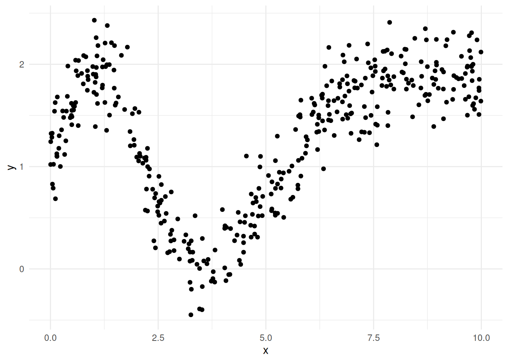
Figure 4.3: Scatterplot of toy dataset.
A tree based method works by systematically splitting the data into groups according to \(x\), and then predicting the target using the means within each group. The recursive partitioning of the data (i.e. the division into groups) is displayed using a tree in Figure 4.4. From the first branching of the tree (at its root) we see that the initial step is to divide the data into two parts: those with \(x < 6.013\) branch to the left, and those with \(x \ge 6.013\) branch to the right. The next step is to further divide those group with \(x < 6.013\) into sub-groups with \(x < 2.113\) and \(x \ge 2.113\).
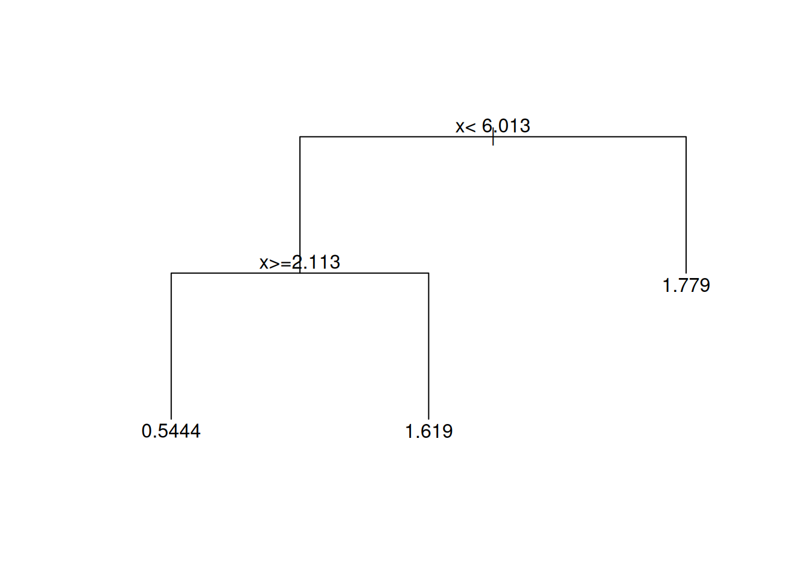
Figure 4.4: Regression tree for the toy dataset.
In principle we could partition the data further (by creating splits in the current groups), but for simplicity we will stop with the current set of leaves. At each leaf the target is estimated by the mean value of the y-variable for all data at that leaf. This means that the predictions are constant across the range of x-values defining each leaf. This is illustrated in Figure 4.5.
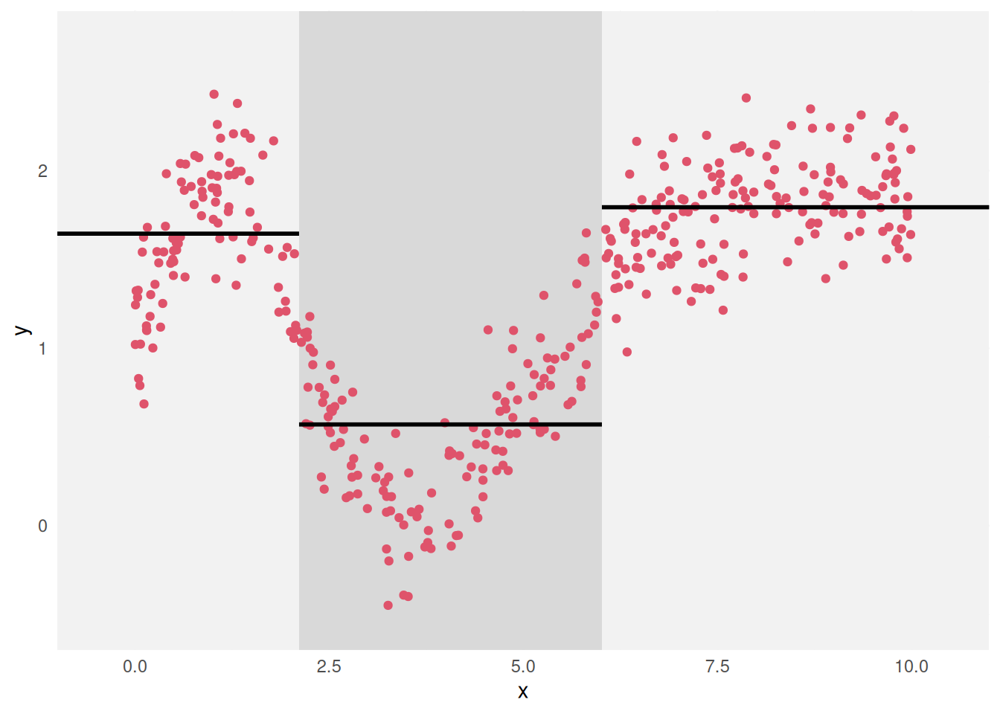
Figure 4.5: Scatterplot of the toy dataset, with the partitioning of the data indicated by the background shading and the predictions within each group plotted as the horizontal line segments.
4.4.2 How to Grow a Tree
Before describing methodology for constructing a regression tree, we need to define some terms. In mathematics, a tree is a type of undirected graph. In the language of graph theory, the branches of the trees are called edges or arcs, and the vertices are often referred to as nodes. The trees that we use are rooted (with the root of the tree conventionally plotted at the top of the tree) and are binary (i.e. each vertex splits into two branches). Vertices at the tips of the tree (i.e. those without further splits) are called leaves.
A regression tree is constructed by making a sequence of binary splits. At each step of the algorithm, we need to examine each of the current set of terminal nodes (i.e. leaves on the current tree) to see which split will most improve the tree. Implicit in this statement is the need for some measure of the quality of a tree, by which we can identify the optimal split.
If we are thinking purely in terms of how well the tree fits the training data, then a natural measure of quality for any given tree is the residual sum of squares. This can be written as \[{\textsf {RSS}}_{train} = \sum_{i=1}^{n_{train}} \left ( y_{train,i} - \hat y_{train,i} \right )^2\] where \(\hat y_{train,i}\) is the tree-based prediction. Now the optimal predictions (in terms of minimizing the squared error) are provided by group means. In other words, if observation \(i\) is assigned to leaf \(\ell\), then \(\hat y_{i} = \bar y_{\ell}\) where \(\bar y_{\ell}\) is the mean of all data at that leaf (and where we have suppressed the subscript \(train\) to simplify the notation). It follows that the residual sum of squares for a tree can be written in the form \[{\textsf {RSS}}= \sum_{\ell} \sum_{i \in C_{\ell}} \left ( y_{i} - \bar y_{\ell} \right )^2\] where the set \(C_{\ell}\) indexes the observation at leaf \(\ell\).
Example 4.8 A Very Simple Choice of Splits
Suppose that we observed the following data:
| \(x\) | 0.1 | 0.3 | 0.5 |
| \(y\) | 2 | 3 | 7 |
It is clear that we need consider only two splits: (i) split the data according to whether \(x < 0.2\) or \(x \ge 0.2\), or (ii) split the data according to whether \(x < 0.4\) or \(x \ge 0.4\). The resulting trees are displayed in Figure 4.6, where the values of the target variables are shown for the observations at each vertex.
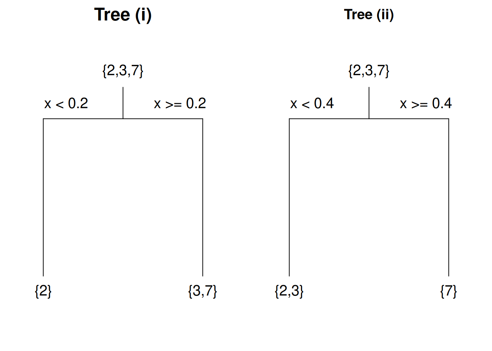
Figure 4.6: Trees constructed using two possible splits of a simple dataset.
For tree (i) the mean for the left-hand leaf is \(\bar{y}_1 = 2\) and the right-hand leaf is \(\bar{y}_2 = (3+7)/2 = 5\). Hence for tree (i) we have \[{\textsf {RSS}}= \left [ (2-2)^2 \right ] + \left [ (3-5)^2 + (7-5)^2 \right ] = 8.\] Following similar calculations, for tree (ii) we have \[{\textsf {RSS}}= \left [ (2-2.5)^2 + (3-2.5)^2 \right ] + \left [ (7-7)^2 \right ] = 0.5.\] We conclude that the second split is better.
Note that we would have got the same results using different splits; for example, a split of \(x < 0.11\) and \(x \ge 0.11\) for tree (i). However, it is conventional to split at the midpoint between the maximum of the ‘low valued’ branch and the minimum of the ‘high valued’ branch.
So far we have dealt only with splits based on numerical predictors. With factors (i.e. categorical predictors) we split by dividing the factor levels into two sets, and then sending observations down left or right branch according to this division. The separation of the levels is again done so as to minimize the residual sum of squares.
If we restrict attention to trees of a certain size (i.e. with a maximum number of splits), then the reader with a particularly well developed sense of curiosity (or good mathematical intuition) might be tempted to ask whether a sequence of splits chosen to minimize the residual sum of squares at each step will produce the optimal tree (i.e. the one with the lowest residual sum of squares overall). The answer is no. The kind of step by step methodology that is employed in tree construction is known as a ‘greedy’ algorithm. It is relatively computationally cheap to perform, but is not guaranteed to generate the best of all trees. In general that would require a sense of forward planning that is not enabled in a greedy algorithm.
4.4.3 Implementing Regression Trees in R
Regression trees can be constructed in R using the rpart function34.
This is part of the rpart library, which must be pre-loaded before the
functions therein can be used. The basic syntax for rpart mirrors that
for lm: for example,
will fit a regression tree with target variable y and predictors x1
and x2, with R searching first the data frame mydata when looking
for these variables.
Example 4.9 Building a Regression Tree for the Wage Data
Here we build a regression tree from the US wage training data, and then use it to make predictions on the test set. The code below constructs the tree, then summarises and plots it.
#> Call:
#> rpart(formula = WAGE ~ ., data = wage.train)
#> n= 400
#>
#> CP nsplit rel error xerror xstd
#> 1 0.17185785 0 1.0000000 1.0033163 0.1511414
#> 2 0.04854524 1 0.8281422 0.8402243 0.1236693
#> 3 0.03576135 2 0.7795969 0.8162939 0.1226450
#> 4 0.02396234 3 0.7438356 0.8256132 0.1529199
#> 5 0.02018117 4 0.7198732 0.8379863 0.1533427
#> 6 0.01628015 5 0.6996921 0.8609038 0.1553798
#> 7 0.01581756 6 0.6834119 0.8744208 0.1556766
#> 8 0.01442217 7 0.6675943 0.8704068 0.1556746
#> 9 0.01119671 9 0.6387500 0.8558673 0.1552453
#> 10 0.01000000 10 0.6275533 0.8638567 0.1555358
#>
#> Variable importance
#> OCCUP EDU EXP AGE UNION SEX MARRIED
#> 33 25 12 12 10 5 2
#>
#> Node number 1: 400 observations, complexity param=0.1718578
#> mean=8.930075, MSE=24.86239
#> left son=2 (280 obs) right son=3 (120 obs)
#> Primary splits:
#> OCCUP splits as LRLRLL, improve=0.17185780, (0 missing)
#> EDU < 13.5 to the left, improve=0.13989640, (0 missing)
#> AGE < 26.5 to the left, improve=0.06522658, (0 missing)
#> SEX splits as LR, improve=0.03670674, (0 missing)
#> EXP < 9.5 to the left, improve=0.03420540, (0 missing)
#> Surrogate splits:
#> EDU < 14.5 to the left, agree=0.833, adj=0.442, (0 split)
#>
#> Node number 2: 280 observations, complexity param=0.04854524
#> mean=7.576857, MSE=12.58379
#> left son=4 (226 obs) right son=5 (54 obs)
#> Primary splits:
#> UNION < 0.5 to the left, improve=0.13701870, (0 missing)
#> AGE < 26.5 to the left, improve=0.08093803, (0 missing)
#> SEX splits as LR, improve=0.07101318, (0 missing)
#> EXP < 8.5 to the left, improve=0.07000718, (0 missing)
#> SECTOR splits as RRL, improve=0.03933339, (0 missing)
#> Surrogate splits:
#> EXP < 45.5 to the left, agree=0.811, adj=0.019, (0 split)
#>
#> Node number 3: 120 observations, complexity param=0.03576135
#> mean=12.08758, MSE=39.26979
#> left son=6 (23 obs) right son=7 (97 obs)
#> Primary splits:
#> EDU < 12.5 to the left, improve=0.07547045, (0 missing)
#> AGE < 36.5 to the left, improve=0.02870219, (0 missing)
#> SECTOR splits as LRL, improve=0.02857539, (0 missing)
#> SEX splits as LR, improve=0.02630380, (0 missing)
#> EXP < 11.5 to the left, improve=0.02292460, (0 missing)
#> Surrogate splits:
#> EXP < 33.5 to the right, agree=0.817, adj=0.043, (0 split)
#> AGE < 21.5 to the left, agree=0.817, adj=0.043, (0 split)
#>
#> Node number 4: 226 observations, complexity param=0.02018117
#> mean=6.935, MSE=9.904874
#> left son=8 (54 obs) right son=9 (172 obs)
#> Primary splits:
#> AGE < 25.5 to the left, improve=0.08965858, (0 missing)
#> EXP < 8.5 to the left, improve=0.07329911, (0 missing)
#> EDU < 13.5 to the left, improve=0.06449993, (0 missing)
#> SECTOR splits as RRL, improve=0.05416370, (0 missing)
#> OCCUP splits as R-R-RL, improve=0.04765219, (0 missing)
#> Surrogate splits:
#> EXP < 7.5 to the left, agree=0.956, adj=0.815, (0 split)
#>
#> Node number 5: 54 observations, complexity param=0.01119671
#> mean=10.26315, MSE=14.8552
#> left son=10 (12 obs) right son=11 (42 obs)
#> Primary splits:
#> SEX splits as LR, improve=0.13881020, (0 missing)
#> EDU < 10.5 to the left, improve=0.11655580, (0 missing)
#> OCCUP splits as L-L-RR, improve=0.05054403, (0 missing)
#> EXP < 40.5 to the right, improve=0.04604305, (0 missing)
#> SECTOR splits as RLR, improve=0.04402349, (0 missing)
#> Surrogate splits:
#> OCCUP splits as L-R-RR, agree=0.833, adj=0.250, (0 split)
#> EXP < 42.5 to the right, agree=0.796, adj=0.083, (0 split)
#>
#> Node number 6: 23 observations
#> mean=8.552174, MSE=11.82924
#>
#> Node number 7: 97 observations, complexity param=0.02396234
#> mean=12.92588, MSE=42.10987
#> left son=14 (66 obs) right son=15 (31 obs)
#> Primary splits:
#> AGE < 38.5 to the left, improve=0.05834135, (0 missing)
#> EXP < 15.5 to the left, improve=0.04795734, (0 missing)
#> OCCUP splits as -R-L--, improve=0.03518085, (0 missing)
#> SECTOR splits as LRL, improve=0.02017132, (0 missing)
#> UNION < 0.5 to the right, improve=0.01365590, (0 missing)
#> Surrogate splits:
#> EXP < 16.5 to the left, agree=0.979, adj=0.935, (0 split)
#> EDU < 13.5 to the right, agree=0.701, adj=0.065, (0 split)
#> SECTOR splits as RLL, agree=0.691, adj=0.032, (0 split)
#>
#> Node number 8: 54 observations
#> mean=5.253148, MSE=4.125855
#>
#> Node number 9: 172 observations, complexity param=0.01628015
#> mean=7.463023, MSE=10.55235
#> left son=18 (132 obs) right son=19 (40 obs)
#> Primary splits:
#> EDU < 13.5 to the left, improve=0.08920385, (0 missing)
#> SECTOR splits as RRL, improve=0.06955595, (0 missing)
#> OCCUP splits as R-R-RL, improve=0.04830948, (0 missing)
#> SEX splits as LR, improve=0.04205271, (0 missing)
#> RACE splits as LRR, improve=0.02647224, (0 missing)
#> Surrogate splits:
#> EXP < 7.5 to the right, agree=0.814, adj=0.20, (0 split)
#> AGE < 63.5 to the left, agree=0.779, adj=0.05, (0 split)
#>
#> Node number 10: 12 observations
#> mean=7.576667, MSE=6.288422
#>
#> Node number 11: 42 observations
#> mean=11.03071, MSE=14.65164
#>
#> Node number 14: 66 observations, complexity param=0.01442217
#> mean=11.85167, MSE=41.02728
#> left son=28 (42 obs) right son=29 (24 obs)
#> Primary splits:
#> MARRIED splits as RL, improve=0.040291440, (0 missing)
#> EXP < 5.5 to the right, improve=0.030118200, (0 missing)
#> OCCUP splits as -R-L--, improve=0.017535030, (0 missing)
#> AGE < 28.5 to the right, improve=0.010555670, (0 missing)
#> UNION < 0.5 to the right, improve=0.009285974, (0 missing)
#> Surrogate splits:
#> AGE < 26.5 to the right, agree=0.697, adj=0.167, (0 split)
#> EXP < 5.5 to the right, agree=0.682, adj=0.125, (0 split)
#> RACE splits as LRL, agree=0.667, adj=0.083, (0 split)
#>
#> Node number 15: 31 observations, complexity param=0.01581756
#> mean=15.2129, MSE=36.7275
#> left son=30 (11 obs) right son=31 (20 obs)
#> Primary splits:
#> SEX splits as LR, improve=0.13816220, (0 missing)
#> AGE < 41.5 to the right, improve=0.08685389, (0 missing)
#> EXP < 32.5 to the right, improve=0.05752757, (0 missing)
#> OCCUP splits as -R-L--, improve=0.05612376, (0 missing)
#> EDU < 15.5 to the left, improve=0.02790855, (0 missing)
#> Surrogate splits:
#> UNION < 0.5 to the right, agree=0.742, adj=0.273, (0 split)
#>
#> Node number 18: 132 observations
#> mean=6.928939, MSE=7.920723
#>
#> Node number 19: 40 observations
#> mean=9.2255, MSE=15.18909
#>
#> Node number 28: 42 observations
#> mean=10.87976, MSE=20.54322
#>
#> Node number 29: 24 observations, complexity param=0.01442217
#> mean=13.5525, MSE=72.32849
#> left son=58 (16 obs) right son=59 (8 obs)
#> Primary splits:
#> EXP < 5.5 to the right, improve=0.102400000, (0 missing)
#> AGE < 29 to the right, improve=0.074819910, (0 missing)
#> SEX splits as RL, improve=0.056089480, (0 missing)
#> OCCUP splits as -R-L--, improve=0.024575440, (0 missing)
#> EDU < 16.5 to the left, improve=0.004440909, (0 missing)
#> Surrogate splits:
#> AGE < 27.5 to the right, agree=0.958, adj=0.875, (0 split)
#>
#> Node number 30: 11 observations
#> mean=12.17545, MSE=16.64208
#>
#> Node number 31: 20 observations
#> mean=16.8835, MSE=39.90923
#>
#> Node number 58: 16 observations
#> mean=11.62812, MSE=20.25744
#>
#> Node number 59: 8 observations
#> mean=17.40125, MSE=154.2513Some points to note:
We start by loading the
rpartpackage.The second command saves a regression tree as
wage.rp. Note the use of the dot in the model formula, again standing for all variables in the dataset excluding the target.The summary of
wage.rpreturns information on the formation of all splits. We have omitted much of the output (where indicated by the string of dots) to save space.The table at the head of the summary for
wage.rpprovides information on the extent to which each new split (i.e. the creation of each new node) has improved the model. We will examine the meaning of the various quantities in this table later, in section @ref{sec:treeprune}.The remainder of the summary output describes each node in turn35. For each vertex we get an ordered list of the top few possible splits (the primary splits). These are specified by inequalities for continuous predictors, and by sequences of L’s and R’s for the levels of categorical predictors (indicating whether observations split down the left or right branch). The listed improvements are measured in terms of a the fractional reduction in the residual sum of squares for the data at the node in question (the parent node for the split). In more detail, suppose that \(\hat y\) is the prediction for all data at the parent node, and that \(\hat y_L\) and \(\hat y_R\) are the predictions at the left and right ‘child’ nodes respectively. Then if we define \({\textsf {RSS}}_P = \sum_{i \in P} (y_i - \hat y)^2\) as the residual sum of squares at the parent, and \({\textsf {RSS}}_L = \sum_{i \in L} (y_i - \hat y_L)^2\) and \({\textsf {RSS}}_R = \sum_{i \in R} (y_i - \hat y_R)^2\) as the residuals sums of squares at left and right children, then the improvement is measured by \[{\tt improve} = 1 - \frac{{\textsf {RSS}}_R + {\textsf {RSS}}_L}{{\textsf {RSS}}_P}.\]
With these comments in mind, we see that the first node (at the root of the tree) was formed by splitting on the variable
OCCUP. Observations at levels 1, 3, 5 and 6 (i.e.Clerical,Other,SalesandService) are sent down the left-hand branch at the split; those at levels 2 and 4 (i.e.ManagementandProfessional) are sent down the right-hand branch. Splitting in this way results in a 17.2% reduction in the residual sum of squares. (The next best option would have been to split according toEDU < 13.5, which would have resulted in a 14% reduction in residual sum of squares.)The next split is at node 2, the left-hand child of the node. We can see that a total of 280 observations were sent to this node at the first split. The optimal split here is on
UNION<0.5(i.e. whether or not the worker has union membership), giving a 13.7% reduction in residual sum of squares for observations at node 2.The leaves of the tree (i.e. the terminal nodes) are described by the number of observations, the mean response (i.e. prediction) and sum of squares at each one. For example, there is a leaf (node 30) with 11 observations and mean target value \(12.18\).
We can plot the structure of the tree using
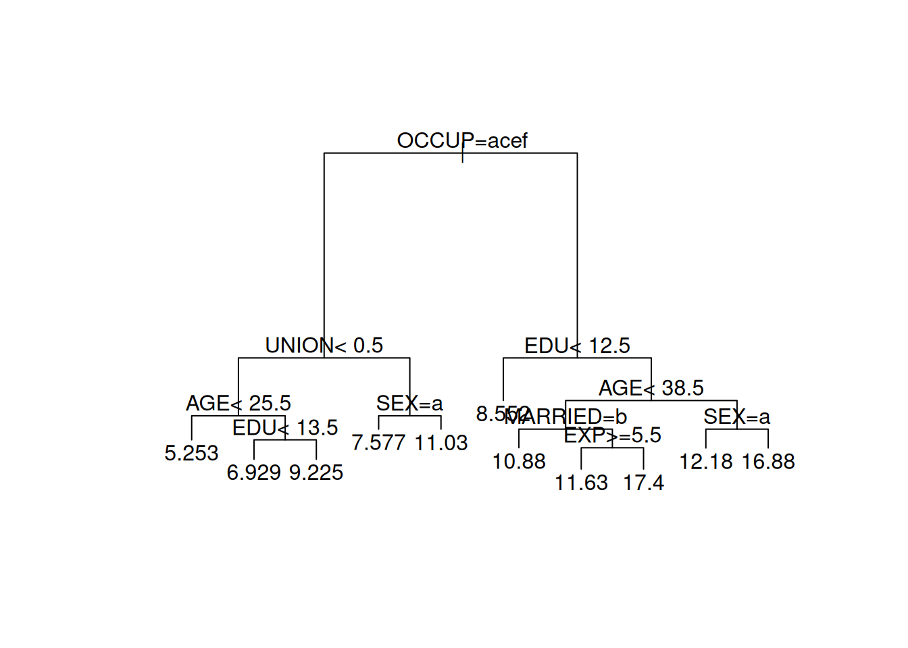
Figure 4.7: Regression tree for the US wage data.
The command plot(wage.rp) plots just the structure of the
regression tree. We add text describing the splits by
text(wage.rp). The optional arguments compress=TRUE
and margin=0.1 in the plot
command tends to improve the appearance of the plotted tree.
Note that the splits based on factors use alphabetically ordered
letters to represent the factor levels (i.e. ‘a’ for level 1, ‘b’
for level 2 and so forth).
We can obtain predictions from the fitted regression tree by applying
the predict command36.
wage.rp.pred <- wage.test |>
bind_cols(.pred = predict(wage.rp, newdata=wage.test))
wage.rp.pred |> select(.pred, WAGE, everything())#> # A tibble: 134 × 12
#> .pred WAGE EDU SOUTH SEX EXP UNION AGE RACE OCCUP SECTOR MARRIED
#> <dbl> <dbl> <dbl> <dbl> <chr> <dbl> <dbl> <dbl> <chr> <chr> <chr> <chr>
#> 1 6.9289 3.75 11 0 M 11 0 28 White Other Const… No
#> 2 7.5767 8 12 0 F 43 1 61 Other Servi… Other Yes
#> 3 6.9289 6 13 1 M 7 0 26 White Other Manuf… Yes
#> 4 12.175 22.83 18 0 F 37 0 61 White Profe… Manuf… No
#> 5 11.031 5.15 13 1 M 1 1 20 White Servi… Other No
#> 6 11.628 6.15 16 0 F 16 0 38 White Profe… Other No
#> 7 6.9289 3 12 1 F 28 0 46 White Cleri… Other Yes
#> 8 10.880 5 14 0 M 0 0 20 White Profe… Const… Yes
#> 9 10.880 9.86 15 0 M 13 0 34 White Profe… Other Yes
#> 10 16.884 6.25 18 0 M 27 0 51 Other Profe… Other Yes
#> # ℹ 124 more rows#> # A tibble: 1 × 1
#> MSE
#> <dbl>
#> 1 24.399Here we have computed the mean squared error of prediction on the
artificial test data using the regression tree wage.rp. A comparison
with the linear regression models discussed earlier shows that the
regression tree predictions are a little worse (a mean squared error of
\(24.4\) in comparison to \(21.9\) for regression model wage.lm). This
could be because the relationship between the target and the important
predictor variables is close to linear, or because the of regression
tree model requires refining.
You may have noticed in the regression tree summary in the Example above
that surrogate splits are listed for some nodes. A surrogate split is
an alternative that approximates the (best) primary split. Surrogate
splits come into play when there are missing data. Specifically, if an
observation lacks data on the current split variable, then it will be
assigned to a branch by applying the surrogate splitting rule. For
instance, had any observation lacked information on OCCUP, then it
would instead have been assigned based on the surrogate split rule
EDU < 14.5. The use of surrogate splits allows regression trees to
make use of records that are partially complete. In comparison,
regression models cannot do so (unless one first imputes replacements
for the missing values).
4.4.4 Pruning
Construction of the regression tree for the wage data halted when there were multiple observations at each leaf. In principle we can continue to split the nodes in any regression tree until we eventually end up with a tree with one observation at each leaf (assuming that each record has a unique combination of values for its predictors). However, this would produce a highly unreliable prediction model.
To understand why, think in terms of bias-variance trade-off. If we have a regression tree with just a single observation at each leaf, then the predictions will be highly variable (if unbiased). On the other hand, if there are a good number of observations at each leaf then the averaging process will result in a far smaller variance for the prediction. The price to pay will be increased bias. In more detail, the predictable mean of the target (i.e. \(f_0\) from equation (4.7)) will typically vary according to the predictors. The regression tree models this as constant within each leaf, so that the greater the range of predictor values the worse the approximation.
Consider, for example, the regression tree for the toy example in Section 4.4.1. The tree in Figure 4.4 gives rise to the prediction model depicted in Figure 4.5. Clearly the horizontal line segments give only a crude approximation to the trend in the data. Were we to divide the x-axis into much small intervals, we could more closely track the trend in the target variable (and hence reduce the bias). However, if we took this to an extreme, and make the intervals so short that each contained just a few data points, then the predictions would be hugely variable. See Figure 4.8.
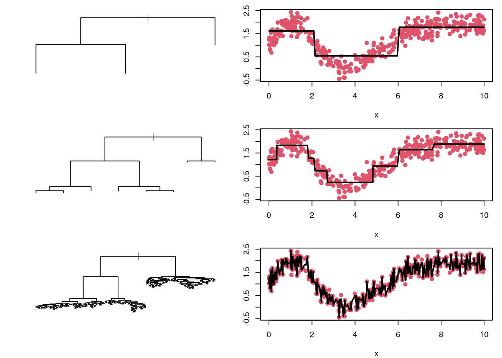
Figure 4.8: Regression trees for the toy dataset with different numbers of splits. The predicted values, plotted as horizontal black lines, are connected to make it easier to follow their trend as a function of \(x\). The top tree is very simple, and produces predictions with low variance but high bias. The bottom tree is highly complex, and produces predictions with high variance but low bias. The middle tree seems to produce a reasonable bias-variance trade-off.
An alternative way of thinking about the bias-variance trade off is in terms of the balance between model complexity and model fit. Model complexity can be measured in terms of the number of vertices in the tree, while model fit can be measured by the residual sum of squares of the fitted tree. The top tree in Figure 4.8 is a simple model (low complexity), with a fairly poor fit to the data. The bottom tree in Figure 4.8 follows the training data extremely closely (i.e. has a very low residual sum of squares), but is highly complex – far more complex than seems warranted. The middle tree provides a balance in terms of model complexity and model fit.
The concept of model complexity motivates a methodology for determining
the level of pruning regression trees. Specifically, we introduce the
complexity parameter \(cp\), which specifies the minimum improvement in
model fit that warrants inclusion of a new split (and the additional
complexity that this implies). This means that if at any stage of the
tree growing we encounter a situation where no split produces an
improvement of at least \(cp\), then the tree is complete37. The measure
of improvement is once again the relative improvement in residual sum of
squares. The default value of \(cp\) is \(0.01\), but this can be changed by
specifying the cp argument of rpart.
Example 4.10 Regression Trees of Different Complexities for the Wage Data
The regression tree for the wage training data displayed earlier in Figure 4.7 was constructed using the default value of the complexity parameter \(cp = 0.01\). We here build trees using \(cp=0.1\) and \(cp=0.001\), and use them for prediction on the wage test data. The resulting trees are plotted in Figure 4.9.
wage.rp.1 <- rpart(WAGE ~ ., data=wage.train, cp=0.1)
wage.rp.2 <- rpart(WAGE ~ ., data=wage.train, cp=0.001)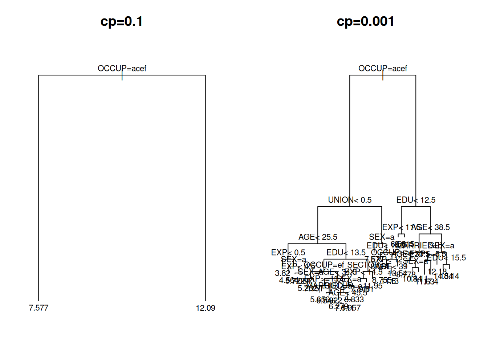
Figure 4.9: Regression trees for the US wage data with complexity parameters \(cp=0.1\) (left-hand panel) and \(cp=0.001\) right-hand panel) respectively.
The main points to take away are first, that the choice of \(cp=0.1\) leads to a hugely simple tree (with just a single split) while \(cp=0.001\) generates a much more complex tree.
We can also compute mean square error on the test data.
wage.rp.pred.2 <- wage.test |>
bind_cols(
.pred1 = predict(wage.rp.1, newdata=wage.test),
.pred2 = predict(wage.rp.2, newdata=wage.test)
)
wage.rp.pred.2 |>
summarise(MSE.1 = mean((.pred1 - WAGE)^2),
MSE.2 = mean((.pred2 - WAGE)^2))#> # A tibble: 1 × 2
#> MSE.1 MSE.2
#> <dbl> <dbl>
#> 1 26.349 22.650The second point of interest is that the mean squared error of prediction for the second tree is much lower than the first. Indeed, the mean squared error of \(\textsf{MSE}= 22.6\) is noticeably lower than that using the default value of \(cp=0.01\).
4.4.5 Validation and Cross-Validation
The default value of \(cp=0.01\) for the complexity parameter feels quite reasonable, at an intuitive level, but it is only a rule-of-thumb. Moreover, as we saw in the previous Example, we can often get better prediction results using alternative values of \(cp\). This raises the question as to how we might try and determine a better value of \(cp\) for prediction. Of course, if we have a test set including values for the target, then we could simply use the value of \(cp\) that leads to minimal predictive error. While in practice the regression tree will be applied to real test data where the target is unobserved (hence the need for prediction!), we might nevertheless try and replicate this approach to selection of \(cp\) using the data that we do have.
We could take all the data for which we have target values, and divide them into training and validation datasets. The training data would be used for growing trees in the usual manner, but performance for any given value of \(cp\) would be assessed by predictive accuracy on the validation dataset38. A potential shortcoming of this approach is the dependence on the particular choice of validation dataset (in essence, a lack of symmetry in the way in which we handle each record), and the reduction in size of the training dataset. We could address the latter issue by splitting the data in proportions 90% to 10% for training and validation sets respectively, but there remains the problem that the particular 10% of observations in the latter set may be unusual.
We can deal with this by using cross-validation. The idea is that we split the data into ten blocks of equal size, with each block in turn being set aside as the validation data. Starting with the first block as the validation set, we train the regression tree on the remaining 90% of the data and calculate the prediction error for various values of \(cp\). We then set aside the second block as the validation set, and compute the prediction error for models trained on the other 90%, and so on. Eventually we will have ten sets of prediction errors, which can be averaged to give a cross-validation estimate of prediction error for each value of \(cp\) that we employed.
Before we illustrate the use of cross-validation for tree selection on the wage data, a number of general points about cross-validation warrant attention.
The 90% to 10% data split just described gives rise to so-called 10-fold cross-validation. While this is common choice, it is by no means the only one. For models that are highly computationally expensive we might prefer 5-fold cross-validation (i.e. a split of 80% to 20% between validation and training sets at each step).
Cross-validation results are subject to noise arising from the random split into the cross-validation blocks. We can avoid this by splitting the data into \(n\) parts, with \(n-1\) records in the training set and just one in the validation set at each step. This is known as leave-one-out cross validation. It can be very time consuming to implement.
The general idea of cross-validation is used far more widely in Statistics than just for regression trees.
Example 4.11 Cross-Validation Regression Tree Selection for the Wage Data
A table of model characteristics for different values of \(cp\) can be
obtained using the command printcp. (This in fact mirrors the first
part of the output that we obtain when using the summary function of a
regression tree.) The argument for printcp is the most complex model
to be assessed (i.e. the one corresponding to the smallest value of
\(cp\)).
#>
#> Regression tree:
#> rpart(formula = WAGE ~ ., data = wage.train, cp = 0.001)
#>
#> Variables actually used in tree construction:
#> [1] AGE EDU EXP MARRIED OCCUP SECTOR SEX UNION
#>
#> Root node error: 9945/400 = 24.862
#>
#> n= 400
#>
#> CP nsplit rel error xerror xstd
#> 1 0.1718578 0 1.00000 1.00634 0.15211
#> 2 0.0485452 1 0.82814 0.84062 0.12540
#> 3 0.0357614 2 0.77960 0.81574 0.12535
#> 4 0.0239623 3 0.74384 0.80052 0.12384
#> 5 0.0201812 4 0.71987 0.86921 0.15412
#> 6 0.0162802 5 0.69969 0.87747 0.15446
#> 7 0.0158176 6 0.68341 0.87389 0.15427
#> 8 0.0144222 7 0.66759 0.86985 0.15411
#> 9 0.0111967 9 0.63875 0.87675 0.15401
#> 10 0.0086679 10 0.62755 0.88142 0.15514
#> 11 0.0083654 11 0.61889 0.87124 0.15476
#> 12 0.0074470 12 0.61052 0.88156 0.15524
#> 13 0.0069457 13 0.60307 0.87837 0.15518
#> 14 0.0059255 14 0.59613 0.86830 0.15443
#> 15 0.0051826 15 0.59020 0.88544 0.15490
#> 16 0.0048281 16 0.58502 0.88212 0.15502
#> 17 0.0042593 18 0.57536 0.87946 0.15504
#> 18 0.0039354 19 0.57110 0.89074 0.15530
#> 19 0.0035496 20 0.56717 0.88993 0.15533
#> 20 0.0032478 21 0.56362 0.89380 0.15530
#> 21 0.0027961 22 0.56037 0.89116 0.15502
#> 22 0.0022777 23 0.55757 0.88619 0.15479
#> 23 0.0019702 25 0.55302 0.88848 0.15473
#> 24 0.0015765 26 0.55105 0.88889 0.15477
#> 25 0.0012715 28 0.54790 0.89082 0.15472
#> 26 0.0010866 29 0.54662 0.89188 0.15479
#> 27 0.0010344 30 0.54554 0.88985 0.15480
#> 28 0.0010000 31 0.54450 0.88998 0.15480The xerror column in the output table contains cross-validation
estimates of the (relative) prediction error. The xstd is the standard
error (i.e. an estimate of the uncertainty) for these cross-validation
estimates. What we see is that the minimum cross-validation error occurs
when \(cp=0.2396\). (Note that any tree grown with \(cp\) between this value
of the next in the table, \(cp=0.2018\) will produce the same tree.)
However, the differences between the values of xerror are quite small
compared to the entries in xstd, indicating that the cross-validation
results do not provide a strong preference for any tree with between 1
and 31 vertices.
Finally, we compute the mean squared prediction error on the test data, using an optimal cross-validation value of the complexity parameter of \(cp=0.023\).
wage.rp.3 <- rpart(WAGE ~ ., data=wage.train, cp=0.023)
wage.rp.pred.3 <- wage.test |> bind_cols(.pred = predict(wage.rp.3, newdata=wage.test))
wage.rp.pred.3 |> summarise(MSE = mean((.pred - WAGE)^2))#> # A tibble: 1 × 1
#> MSE
#> <dbl>
#> 1 23.312The prediction error of \(\textsf{MSE}=23.3\) is a bit better than that obtained using the default value of \(cp\), but is less good than we obtained with \(cp=0.001\). This simply reflects the fact that cross-validation results are subject to error, and so are by no means certain to identify the best model.
4.4.6 Tree instability
Unfortunately, decision tree models are known to be unstable. When many variables are available, there are often many potential competing splits that serve to improve the model fit by around the same amount. However, the choice of which split to use can then result in very different subtrees.
One way to see this is to produce a tree for a data set and then take a bootstrap resample by randomly re-selecting the same number of observations from the data frame with replacement and producing another tree. Ideally the trees should not differ much as the data come from the same underlying population (we have simply resampled the original data).
However, as we will see, often the trees can be markedly different.
Example 4.12 Unstable trees for the WAGE data
Consider the following code snippet that produces a bootstrap resample of the wage-train data:
This dataset has the same (or very similar) relationships between WAGE and the other numeric variables, as we can see in Figure 4.10.
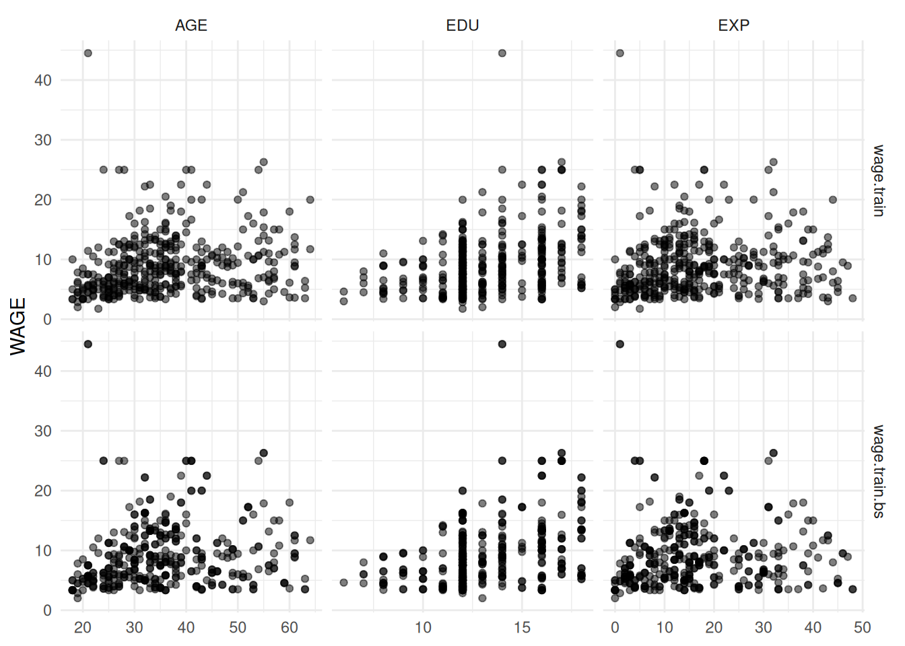
Figure 4.10: Relationships between WAGE and the numeric variables from the wage.train and wage.train.bs datasets.
The same holds for the categorical predictors. Thus, we might expect that trees produced using the wage.train or wage.train.bs data sets should be similar. The tree from wage.train.bs is shown in Figure 4.11.
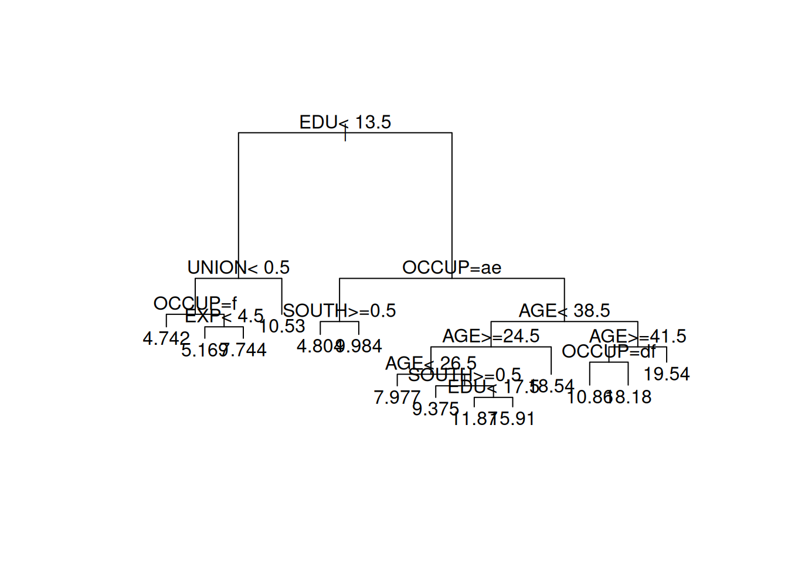
Figure 4.11: Tree produced from the wage.train.bs bootstrap resampled dataset.
Comparing this to the tree in Figure 4.7 we see that it is quite different, with even the first split differing. The variables SEX and MARRIED are used in the tree for wage.train, yet both these variables are unused in the wage.train.bs tree. Similarly, the variable UNION is used in the wage.train.bs tree but not in the wage.train tree.
4.5 Random forests
A forest is a collection of trees. A random forest is a collection of decision trees (e.g. regression trees) generated by applying two separate randomisation processes:
- The data (rows) are randomised through a bootstrap resample.
- A random selection of predictors (columns) are utilised for each split, rather than using all variables.
Once done, a tree is fit to the data. The process is then repeated, and many trees are generated. Predictions are then averaged across all the trees in the forest.
The forest then benefits from the instability of the trees: Each bootstrap resample is likely to generate a different tree as tree building is a brittle process. This is further enhanced by considering only a subset of the available predictor variables for each split in the tree. Essentially the forest is ensuring that all parts of the data available to us are explored by fitting many purposefully different trees. By averaging across many different trees the forest is generally able to do better than any particular tree - particularly when forward predicting on new data.
Random forests are examples of ensemble methods which combine prediction across multiple different models to give a better prediction than just one of the models could provide.
The key mechanism underlying random forests is bagging (bootstrap aggregating): each tree is trained on a different bootstrap resample of the training data, and predictions are averaged across all trees. Because each bootstrap sample produces a somewhat different tree (recall the instability demonstrated in Section 4.4.6), the average of many such trees is considerably more stable than any single tree. Random forests add one further step – random predictor subsets at each split – which makes the individual trees less correlated with each other and thereby improves the benefit of averaging (the formal variance-reduction argument is given in Section 9). Other ensemble strategies, including boosting and stacking, are also covered in that chapter.
There are two key parameters when fitting a random forest that can potentially be tuned:
- The number of predictor variables to consider for each split. This can be important for tuning model fit. Often using fewer predictor variables for each split can work well to ensure the trees differ.
- The tree depth. Typically the trees are not pruned, as we don’t mind if the individual trees over-fit as we’ll be averaging out any over-fitting. The depth of the tree is generally controlled by restricting splits to nodes with some minimum number of observations.
4.5.1 Implementation in R
There are a number of different packages in R that can fit random forests. For example:
randomForest()from therandomForestpackageranger()from therangerpackageml_random_forest()from thesparklyrpackage
For practical work, ranger() is a good modern default: it is fast,
widely used, and fits naturally into the tidymodels workflow that we
develop in Chapter 5. The older randomForest() package remains useful
to know about because you will still encounter it in older code and
examples.
Example 4.13 Random forest for the WAGE data
A random forest model is fit to the WAGE data with default arguments as follows, and prediction on the test set is performed:
library(ranger)
set.seed(1945)
wage.rf.1 <- ranger(WAGE ~ ., data = wage.train, num.trees = 500)
wage.rf.1.pred <- wage.test |>
bind_cols(.pred = predict(wage.rf.1, data = wage.test)$predictions)
wage.rf.1.pred |>
summarise(MSE = mean((.pred - WAGE)^2))#> # A tibble: 1 × 1
#> MSE
#> <dbl>
#> 1 21.369Some notes:
As the forest utilises randomisation, we set the random seed so we can reproduce these results.
The forest performs reasonably well without additional tuning, which is one reason random forests are so popular in practice.
The argument
num.trees = 500asks for 500 trees in the forest, which is a common default choice.
We can tune the model by altering the mtry parameter, which selects
the number of predictors to consider for each split in the tree. Another
possible tuning parameter governs the depth of the tree, given in
ranger by min.node.size. Smaller values allow deeper trees.
wage.rf.2 <- ranger(WAGE ~ ., data = wage.train, num.trees = 500,
mtry = 2)
wage.rf.3 <- ranger(WAGE ~ ., data = wage.train, num.trees = 500,
mtry = 2, min.node.size = 1)
wage.rf.pred <- wage.test |>
bind_cols(
.pred2 = predict(wage.rf.2, data = wage.test)$predictions,
.pred3 = predict(wage.rf.3, data = wage.test)$predictions
)
wage.rf.pred |>
summarise(MSE.2 = mean((.pred2 - WAGE)^2),
MSE.3 = mean((.pred3 - WAGE)^2))#> # A tibble: 1 × 2
#> MSE.2 MSE.3
#> <dbl> <dbl>
#> 1 21.372 21.756The
wage.rf.2forest is fit withmtry=2, so that just 2 predictors (chosen at random) will be considered for each split.The
wage.rf.3forest additionally setsmin.node.size=1so that the trees will be grown more deeply.We bind the predictions from both forests as separate columns
.pred2and.pred3to thewage.testdata, so that we can then usesummarise()to compute the mean square error of each.In this example, the original forest performs better.
For a more systematic version of this tuning process, using cross-validation rather than a single validation split, see Chapter 5.
4.6 Neural Networks
4.6.1 An Introduction to Neural Networks
An artificial neural network (often abbreviated to just ‘neural network’) is a type of prediction model based on a crude representation of a human brain. The model comprises a highly interconnected network of ‘neurons’ (the nodes of the network) which ‘fire’ and hence produce an output only if the level of input is sufficiently high.
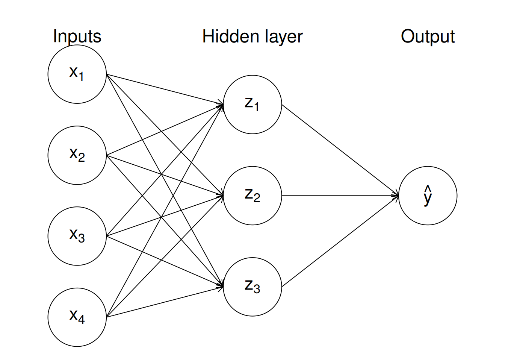
Figure 4.12: Diagram of a simple artificial neural network.
An artificial (feed-forward) neural network consists of an ordered sequence of layers of neurons, as illustrated in Figure 4.12. Each node in one layer is connected to all nodes in the previous layer, through which it receives information, and to all nodes in the next layer, to which it sends information. The first layer (working from the left, with the network arrayed as in the Figure) comprises the input nodes, where predictor information is fed into the network. Next follow a number of hidden layers, and finally there is an output node39. In principle a neural network can be many hidden layers, with each additional layer adding to the flexibility, complexity and computational cost of the model. In practice neural networks with just a single hidden layer are often preferred. We shall focus on neural networks of this type henceforth.
4.6.2 Building a Neural Network
To implement a neural network we must (i) decide on the number, \(M\), of nodes in the hidden layer; (ii) devise functions to relate the derived features \(z_1, \ldots, z_M\) (i.e. the values in the hidden layer) to the input variables; and (iii) choose a function to describe the predicted target \(\hat y\) in terms of \(z_1, \ldots, z_M\). Now, neural networks are rather complex things (we are definitely entering the territory of ‘black box’ prediction models here), and there is little by way of theory to help with these choices. In particular, selection of the number of hidden nodes is something of an art. Nevertheless, for prediction problems we will not need more hidden nodes than the number of predictors \(p\), where we think of factors in terms of their dummy variable representation40. Using \(\lceil p/2 \rceil\) hidden nodes is often a reasonable place to start, though some further exploration is often useful41.
The function that relates the derived features to the inputs (i.e. predictors) is called the activation function, which we shall denote by \(\phi\). It operates on a linear combination of the predictors, so that \(z_k = \phi(v_k)\) where for \(k=1,\ldots,M\). The usual choice of \(\phi\) is the sigmoid function \[\phi(v) = \frac{1}{1 + e^{-v}}\] which is plotted in Figure 4.13.
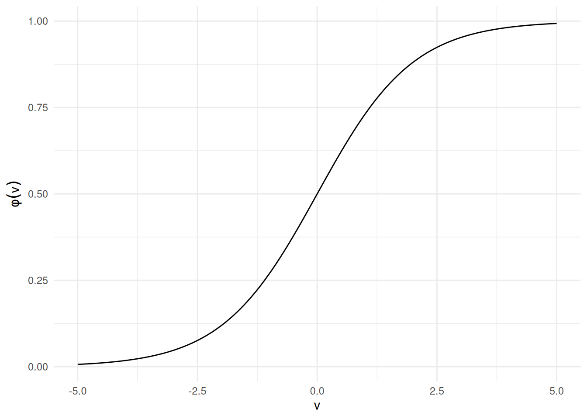
Figure 4.13: A sigmoid activation function.
The predicted target \(\hat y\) is then derived as a linear combination of the hidden features: \[\begin{equation} \hat y = \beta_0 + \beta_1 z_1 + \cdots + \beta_M z_M. \tag{4.11} \end{equation}\]
The parameters \(\alpha_{01}, \alpha_{11}, \ldots, \beta_{M}\) of the neural network are often referred to as weights. They must be estimated by fitting the model to training data. We seek to select the weights that minimize the residual sum of squares for predictions from the neural network, but this process is not straightforward because of the complexity of the model (and in particular, the sheer number of parameters that need to be estimated). In practice neural networks are fitted using a so-called ‘back propagation algorithm’.
4.6.3 Prediction Using Neural Networks in R
The R function for fitting a neural network is nnet. This is part of
the nnet package which must be pre-loaded. The syntax to fit a neural
network (of the type described above) is of the form
The specification of the model formula and data frame is familiar, but
there are two other arguments that require attention. The size
argument specifies the number of nodes in the hidden layer. It has no
default value. The argument linout is logical, and indicates whether
the relationship between the prediction (output \(\hat y\)) and the
derived features is linear (as in Equation (4.11)) or not.
The default setting for this
argument is FALSE, whereupon the right-hand side of Equation (4.11)
is transformed so that \(\hat y\) is forced to
lie in the interval \([0,1]\). This default setting turns out to be
appropriate for classification problems (when we are trying to estimate
probabilities of class membership) but for prediction problems we must
set linout=TRUE.
In addition to the essential arguments just discussed, nnet has a
number of important optional arguments that control the operation of the
model fitting algorithm. The decay argument deserves particular
attention. It controls the weight updating rate in the back propagation
algorithm, and can have quite a significant impact on the results. The
default value is zero, but setting decay to a value such as \(0.01\) or
\(0.001\) is often a better choice.
The model fitting algorithm used by nnet requires initial values to be
set for the weights. By default, the algorithm selects the starting
value for each weight randomly on the interval \([-0.5,0.5]\). It turns
out that the final values of the weights can be quite dependent upon the
choice of initial values, and as a consequence you may find that the
fitted neural network (and hence predictions) can vary, even when one is
running precisely the same code. This variation can be suppressed by
setting the random number seed with the set.seed() command, but the
fact remains that fitting neural networks using nnet is a more
uncertain and difficult business than fitting either linear regression
or regression tree models.
Once we have a fitted neural network model, the predict command can be
applied to obtain predictions in the usual way.
Example 4.14 Neural Network Prediction for the Wage Data
We apply neural networks, built on the wage training data, to predict
wages in the test dataset. In determining the number of hidden nodes to
select initially, we note that the data frame has 5 numerical
predictors, namely EDU, SOUTH, EXP, UNION, and AGE; and 5
factors, namely SEX (with 2 levels), RACE (3 levels", OCCUP (6
levels), SECTOR (3 levels) and MARRIAGE (2 levels). This gives an
equivalent number of numerical predictors of
\(p = 5 + 1 + 2 + 5 + 2 + 1 = 16\), and hence suggests that we start by
trying \(p/2 = 8\) nodes in the hidden layer.
#> # weights: 145
#> initial value 35238.295276
#> iter 10 value 9797.535740
#> iter 20 value 9281.078015
#> iter 30 value 8407.104646
#> iter 40 value 7137.560954
#> iter 50 value 6409.347535
#> iter 60 value 6055.671851
#> iter 70 value 5653.071563
#> iter 80 value 5458.217813
#> iter 90 value 5339.338424
#> iter 100 value 5294.441153
#> final value 5294.441153
#> stopped after 100 iterationsNotice that this network stopped training after 100 iterations, the default.
We should increase the number of iterations to ensure convergence. We’ll also
try varying the decay and size parameters:
#> # weights: 145
#> initial value 35238.295276
#> iter 10 value 9797.535740
#> iter 20 value 9281.078015
#> iter 30 value 8407.104646
#> iter 40 value 7137.560954
#> iter 50 value 6409.347535
#> iter 60 value 6055.671851
#> iter 70 value 5653.071563
#> iter 80 value 5458.217813
#> iter 90 value 5339.338424
#> iter 100 value 5294.441153
#> iter 110 value 5277.264786
#> iter 120 value 5259.477058
#> iter 130 value 5221.375520
#> iter 140 value 5213.262776
#> iter 150 value 5204.729204
#> iter 160 value 5186.140067
#> iter 170 value 5181.490169
#> iter 180 value 5180.836426
#> iter 190 value 5180.713899
#> iter 200 value 5180.681210
#> iter 210 value 5180.664533
#> iter 220 value 5180.656824
#> iter 230 value 5180.649072
#> final value 5180.648896
#> convergedset.seed(1069)
wage.nn.2 <- nnet(WAGE ~ .,size=8, data=wage.train, linout=TRUE, maxit=1000, decay=0.01)#> # weights: 145
#> initial value 35238.563668
#> iter 10 value 9791.548415
#> iter 20 value 8939.685765
#> iter 30 value 7877.035081
#> iter 40 value 6878.376122
#> iter 50 value 6481.117353
#> iter 60 value 6207.284772
#> iter 70 value 5888.370643
#> iter 80 value 5679.460865
#> iter 90 value 5587.558053
#> iter 100 value 5562.770888
#> iter 110 value 5549.232998
#> iter 120 value 5534.746892
#> iter 130 value 5377.320342
#> iter 140 value 4956.878840
#> iter 150 value 4748.302776
#> iter 160 value 4666.816050
#> iter 170 value 4641.362805
#> iter 180 value 4522.339012
#> iter 190 value 4249.076658
#> iter 200 value 4148.421313
#> iter 210 value 4141.294333
#> iter 220 value 4128.342428
#> iter 230 value 4113.462752
#> iter 240 value 4088.338712
#> iter 250 value 4036.092349
#> iter 260 value 3885.738552
#> iter 270 value 3665.268656
#> iter 280 value 3599.800099
#> iter 290 value 3598.014247
#> iter 300 value 3587.143227
#> iter 310 value 3579.255264
#> iter 320 value 3558.760159
#> iter 330 value 3544.988341
#> iter 340 value 3537.662068
#> iter 350 value 3526.169481
#> iter 360 value 3511.864771
#> iter 370 value 3490.326282
#> iter 380 value 3471.140803
#> iter 390 value 3467.922148
#> iter 400 value 3463.300108
#> iter 410 value 3459.851024
#> iter 420 value 3458.404360
#> iter 430 value 3458.068068
#> iter 440 value 3457.741192
#> iter 450 value 3457.539546
#> iter 460 value 3457.523272
#> iter 470 value 3457.490380
#> iter 480 value 3457.378970
#> iter 490 value 3456.983406
#> iter 500 value 3456.783995
#> iter 510 value 3456.677792
#> iter 520 value 3456.545741
#> iter 530 value 3456.508321
#> iter 540 value 3456.497985
#> iter 550 value 3456.495455
#> iter 560 value 3456.493827
#> final value 3456.493751
#> converged#> # weights: 91
#> initial value 35078.872453
#> iter 10 value 9898.773133
#> iter 20 value 9639.053885
#> iter 30 value 9144.093441
#> iter 40 value 7826.027699
#> iter 50 value 7280.906397
#> iter 60 value 7014.257397
#> iter 70 value 6633.590521
#> iter 80 value 6445.393572
#> iter 90 value 6204.602833
#> iter 100 value 6060.848795
#> iter 110 value 6010.770063
#> iter 120 value 5868.244858
#> iter 130 value 5771.944799
#> iter 140 value 5702.256407
#> iter 150 value 5664.424728
#> iter 160 value 5642.921250
#> iter 170 value 5618.526653
#> iter 180 value 5613.555296
#> iter 190 value 5613.229284
#> final value 5613.219380
#> convergedset.seed(1069)
wage.nn.4 <- nnet(WAGE ~ .,size=5, data=wage.train, linout=TRUE, maxit=1000, decay=0.01)#> # weights: 91
#> initial value 35079.059683
#> iter 10 value 9899.087090
#> iter 20 value 9696.645570
#> iter 30 value 8506.433897
#> iter 40 value 7929.135956
#> iter 50 value 7076.357762
#> iter 60 value 6759.033520
#> iter 70 value 6585.682663
#> iter 80 value 6527.502204
#> iter 90 value 6514.004580
#> iter 100 value 6486.715687
#> iter 110 value 6422.863823
#> iter 120 value 6413.359669
#> iter 130 value 6404.914846
#> iter 140 value 6391.157083
#> iter 150 value 6366.201123
#> iter 160 value 6361.773124
#> iter 170 value 6315.485887
#> iter 180 value 6183.450268
#> iter 190 value 6057.247575
#> iter 200 value 6045.648792
#> iter 210 value 6018.709366
#> iter 220 value 5833.713519
#> iter 230 value 5240.280659
#> iter 240 value 4877.286607
#> iter 250 value 4634.578901
#> iter 260 value 4533.734798
#> iter 270 value 4486.430186
#> iter 280 value 4470.048547
#> iter 290 value 4443.323159
#> iter 300 value 4418.315674
#> iter 310 value 4408.905750
#> iter 320 value 4378.615462
#> iter 330 value 4331.182426
#> iter 340 value 4281.052058
#> iter 350 value 4231.356086
#> iter 360 value 4190.805869
#> iter 370 value 4172.890858
#> iter 380 value 4165.957930
#> iter 390 value 4161.924512
#> iter 400 value 4159.483437
#> iter 410 value 4158.166529
#> iter 420 value 4157.733398
#> iter 430 value 4157.658218
#> iter 440 value 4157.581357
#> iter 450 value 4157.535733
#> iter 460 value 4157.531644
#> final value 4157.529530
#> convergedwage.nn.pred <- wage.test |> bind_cols(
nn.1 = predict(wage.nn.1, newdata=wage.test),
nn.2 = predict(wage.nn.2, newdata=wage.test),
nn.3 = predict(wage.nn.3, newdata=wage.test),
nn.4 = predict(wage.nn.4, newdata=wage.test)
)
wage.nn.pred |>
pivot_longer(starts_with("nn."), names_to = "model", values_to=".pred") |>
group_by(model) |>
summarise(MSE = mean((.pred - WAGE)^2))#> # A tibble: 4 × 2
#> model MSE
#> <chr> <dbl>
#> 1 nn.1 24.423
#> 2 nn.2 32.163
#> 3 nn.3 21.948
#> 4 nn.4 29.739Some points to note:
We reinitialize the random number generator before fitting each model so as to improve comparability between models of the same size.
We combine the predictions by creating multiple columns named
nn.1throughnn.4.We compute the MSE for all four models at once by pivoting the four prediction columns longer, so we can group by and summarise to compute the MSE at once.
The first model has 8 hidden nodes. Given that there are \(p+1\) weights to estimate per hidden node (the number of \(\alpha\) parameters in Equation (4.10), and 8+1 parameters to estimate for the output nodes (the number of \(\beta\) parameters in Equation (4.11) the model hence has \(17\times 8 + 9 = 145\) weights to be determined. The mean prediction error for this model on the artificial test set is \(\textsf{MSE}= 24.4\).
In the second model we try specifying 0.01 for the
decayargument. As a result we notice a much better training RSS (the final value of iteration output), but a significantly worse prediction on the independent test set of \(\textsf{MSE}= 32.2\). This is due to overfitting. We have so many degrees of freedom that we’ve coerced the neural network into fitting the training data too well - with new observations that are just a bit different, we get the predictions badly wrong. We can see this when we look at the prediction on the training data, which are significantly lower forwage.nn.2:wage.nn.pred.train <- wage.train |> bind_cols( nn.1 = predict(wage.nn.1, newdata=wage.train), nn.2 = predict(wage.nn.2, newdata=wage.train), nn.3 = predict(wage.nn.3, newdata=wage.train), nn.4 = predict(wage.nn.4, newdata=wage.train) ) wage.nn.pred.train |> pivot_longer(starts_with("nn."), names_to = "model", values_to=".pred") |> group_by(model) |> summarise(MSE = mean((.pred - WAGE)^2))#> # A tibble: 4 × 2 #> model MSE #> <chr> <dbl> #> 1 nn.1 12.952 #> 2 nn.2 8.3982 #> 3 nn.3 14.033 #> 4 nn.4 10.217The third and fourth models differ from the first and second only in that we reduce the number of hidden nodes to 5, thus reducing the number of weights to 91. As a result, the prediction errors for the neural nets are \(21.9\) for the default value of
decayand \(29.7\) for decay 0.01.
4.7 Summary of Prediction Methods
There are a number of steps involved in statistical prediction. The first is to choose a methodology. At one extreme are linear regression models, with powerful supporting theory but limited flexibility. We may expect linear regression models to perform well in cases where the relationships between variables are almost linear, but to struggle when this is clearly not the case. At the other extreme are neural networks, which can handle more or less any kind of relationships between variables, but are so complicated that model fitting and assessment can be an uncertain business.
Having selected a methodology, we are faced with the problems of model fitting and model selection. In general, the more theory that we have available on a type of model, the more straightforward model fitting will be, and the more options we will have for model selection. Model fitting is implemented using training data, and is usually done with the aim of minimizing the residual sum of squares. With regard to model selection, in linear regression this is a matter of deciding which variables should be in the model, while for regression trees we must choose the number of splits in the tree. When we lack theory (or it is too complex to implement), we can employ generic approaches like the use of validation datasets for model comparison, or cross-validation techniques.
We might assess the accuracy of our prediction model. This can be done using an artificial test dataset, which should be independent of training and validation sets (so as to avoid bias due to unfair ‘home advantage’). The rich theory for linear regression models allows us to assess prediction accuracy (e.g. through prediction intervals) without the need for a test dataset, but the results are reliable only when model assumptions hold.
Once we have selected what we think is a good prediction model (e.g. a neural network with 6 nodes in the hidden layer and some given value of the decay parameter) we are in a position to do ‘real world’ prediction on test cases where the target is truly missing. As mentioned in Section 4.2, we should refit our preferred model on all the training data before applying it to the real test dataset.
Example 4.15 Time for a Final Example on Prediction
We have covered a lot of detail on various techniques for prediction. With such detail comes the danger that you might lose sight of the big picture. To try and help, this Example tries to put everything together in an easy to follow ‘toy’ application.
Imagine that you are advising the owner of a shop selling antique clocks on pricing. For each clock data is available on two predictor variables, as follows:
Age |
age of clock, in years |
Condition |
factor on three levels, good, average, poor |
The shop has recently sold 50 clocks. For these clocks the sale price is available, in addition to the predictor variables. The information on these 50 clocks forms the training data. The shop has another 20 clocks in stock, awaiting sale. These form the test data.
We must use the training data to create some rule relating the target
variable Price (sale price, in dollars) to the predictor variables.
Whatever methodology we employ to construct this rule (be it linear
regression, or neural networks, or whatever) will result in a function
\(f\) that forms a prediction
\[\widehat {\tt Price} = f({\tt Age}, {\tt Condition})\] for any given
values of the predictor variables. We then apply this rule to the unsold
clocks (the test data), so that in each case we get a predicted price.
Suppose for simplicity that we just consider two methods of prediction: linear regression, and regression trees. The R code below creates prediction rules using each of these methodologies, assesses their efficacy on a validation set, and then applies the better of them to make predictions on the test data.
We start by just looking at a print out of some of the data.
clock.train <- read_csv("../data/clock-train.csv")
clock.test <- read_csv("../data/clock-test.csv")
clock.train |> slice_head(n=4)#> # A tibble: 4 × 3
#> Age Condition Price
#> <dbl> <chr> <dbl>
#> 1 67 Average 220
#> 2 161 Average 630
#> 3 96 Poor 200
#> 4 63 Average 230#> # A tibble: 4 × 2
#> Age Condition
#> <dbl> <chr>
#> 1 70 Good
#> 2 89 Good
#> 3 63 Poor
#> 4 127 PoorNotice (of course) that the training data includes the sale price, whereas the (real) test data does not (which is why we’re trying to predict it!)
Next, we divide the training data into a new training set and a
validation (i.e. artificial test) set. The rsample package has the
useful function initial_split for this:
library(rsample)
set.seed(442)
split = initial_split(clock.train, prop = 0.8)
clock.train.new <- training(split)
clock.validation <- testing(split)The object split contains information on how the split has been performed.
We have specified prop=0.8 to retain 80% of the data for training, and
20% of the data for the validation set. This is somewhat arbitrary, though
this sort of 80/20 or 75/25 split is common. We extract the new training
data and validation data using the training
and testing functions. Note the use of the set.seed command to
initialize the random number generator, so that we can later recreate
this precise example if we wish.
We now use the new training data to build linear regression and regression tree prediction models. We then assess their predictive accuracy on the validation set.
library(rpart)
clock.lm <- lm(Price ~ Age + Condition, data=clock.train.new)
clock.rp <- rpart(Price ~ Age + Condition, data=clock.train.new, cp=0.001)
clock.pred <- clock.validation |>
bind_cols(
pred.lm = predict(clock.lm, newdata=clock.validation),
pred.rp = predict(clock.rp, newdata=clock.validation)
)
clock.pred#> # A tibble: 10 × 5
#> Age Condition Price pred.lm pred.rp
#> <dbl> <chr> <dbl> <dbl> <dbl>
#> 1 161 Average 630 626.75 655
#> 2 145 Poor 410 414.26 655
#> 3 64 Average 220 159.02 361.25
#> 4 143 Average 490 539.96 655
#> 5 140 Average 480 525.49 655
#> 6 149 Poor 380 433.55 655
#> 7 165 Good 1040 908.30 655
#> 8 98 Poor 190 187.63 236.43
#> 9 118 Average 350 419.41 361.25
#> 10 143 Average 480 539.96 655#> # A tibble: 1 × 2
#> MSE.lm MSE.rp
#> <dbl> <dbl>
#> 1 3694.2 39521.The clock.pred dataset combines the true sales prices from the validation
set with the predictions using the linear model and
regression tree, just for the purposes of illustrating the performance
of the two methods in this example. As is confirmed by the final mean
squared error values, the linear model appears the much better model for
prediction in this case.
It is natural to use a linear model to predict the sale prices on the real test data (since it has far lower prediction MSE on the validation data). However, before we do so, it makes sense to refit the linear model to the original training data. The point is that the split into new training data and validation has served its purpose (i.e. to decide whether regression trees or linear regression is preferable in this case). We should now be able to get a slightly better linear regression model if we fit it using all 50 training cases, rather than just the 40 that were retained in the reduced training set.
clock.lm.final <- lm(Price ~ Age + Condition, data=clock.train)
clock.pred.test <- clock.test |>
bind_cols(PredPrice = predict(clock.lm.final, newdata=clock.test))
clock.pred.test#> # A tibble: 20 × 3
#> Age Condition PredPrice
#> <dbl> <chr> <dbl>
#> 1 70 Good 467.14
#> 2 89 Good 557.33
#> 3 63 Poor 20.243
#> 4 127 Poor 324.03
#> 5 145 Poor 409.47
#> 6 87 Poor 134.16
#> 7 87 Good 547.83
#> 8 91 Average 282.74
#> 9 180 Poor 575.61
#> 10 171 Poor 532.89
#> 11 148 Average 553.31
#> 12 140 Good 799.41
#> 13 172 Good 951.30
#> 14 136 Good 780.42
#> 15 86 Average 259.01
#> 16 95 Good 585.81
#> 17 85 Good 538.34
#> 18 122 Average 429.89
#> 19 97 Average 311.22
#> 20 153 Average 577.04The final command displays the predictions on the test cases alongside the predictor variables.
We close this Example by noting that this analysis is simpler than one
would follow in practice. There was no attempt to tune the methods, for
instance by examining the effects of including additional terms in the
linear model (say a quadratic term in Age) or adjusting the complexity
parameter in the regression tree. We also did not consider neural
networks.
The previous example has illustrated how one would perform prediction in a real problem (and provides a guide for attempting a real world prediction problem like you might do in an assignment). The rest of the examples in this chapter dealt with the artificial setting in which we knew the values of the target variable for the test cases, since one of the purposes of those examples is to learn more about the comparative performance of various prediction methods.
Looking ahead, Chapter 5 revisits this material using recipes,
workflows, resampling, and tuning, so that the same prediction ideas
can be used in a more reproducible modelling pipeline.
The predictand is the variable whose value one is trying to predict. The predictors are those variables that are used to generate the prediction.↩︎
The sauropods are a class (more precisely, and ‘infraorder’) of ‘lizard hipped’ dinosaurs with small heads, long necks and tails, and thick legs. Brachiosaurus, Diplodocus, and Apatosaurus are well known examples.↩︎
There are many alternative methods of prediction available, but the three just listed are the ones that we will focus upon.↩︎
At Massey, a detailed, intermediate level coverage of linear regression is provided in the paper 161.251 Regression Modelling↩︎
A linear regression model with two or more predictors is often referred to as a multiple linear regression model.↩︎
The notation \(N(\mu,\sigma^2)\) refers to a normal distribution with mean \(\mu\) and variance \(\sigma^2\).↩︎
It actually turns out that one of the indicator variables for each factor is redundant, since we must have a ‘baseline’ against which other factor levels are measured. Knowledge of the details are not required for this paper.↩︎
However, note that the \(p\) in the equation will no longer correspond to the original number of predictors if some of these were factors that require coding in terms of multiple binary variables.↩︎
The function name
lmstandard for linear model, of which linear regression models are one example. See the paper 161.251 for further details.↩︎See paper 161.251 for details.↩︎
Note that if the data frame
my.test.predictorsalso contains values for the target variable (or any other variables) these will be ignored for the purposes of computing the predictions↩︎We may assume without loss of generality that the error is centred at zero, so that \(f_0 = {\textsf E}[y_0]\) is the mean value of the target.↩︎
You will not be expected to reproduce the decomposition of MSE in an exam, but you should be able to state the result and understand its consequences.↩︎
The estimand is the thing we are trying to estimate.↩︎
Other related methods of variable selection are covered in 161.251↩︎
The
stepfunction can implement other algorithms for variable selection, but these are beyond the scope of this paper↩︎There is some elegant mathematical theory to demonstrate that linear regression models fitted using the method of least squares are optimal (in some natural senses) when the underlying assumptions are valid.↩︎
Regression trees go under a variety of different names. You may them referred to under the more general acronym CART (classification and regression trees), and they may also be described recursive partitioning methods (for reasons that will soon become clear).↩︎
The function name
rpartis an abbreviation of recursive partitioning.↩︎Note that the node numbers increase as we move down the tree, but that the numbers are not consecutive (there are gaps in the numbering sequence.↩︎
This is an example of R’s clever generic syntax. The
predictcommand interprets the type of object to which it is applied, and then computes predictions in the appropriate manner.↩︎This is a pruned tree, in the sense that it is much smaller than the tree that would be obtained were we to split until all leaves contain just a single observation.↩︎
If you are wondering about the difference between a validation data and an artificial test dataset with target values, it is in their usage. Validation datasets are used for model selection; for example, to choose the best size of regression tree. Artificial test datasets with target values are used to estimate prediction errors. The prediction errors observed on the validation dataset will not be unbiased, because (by definition) they will be smallest for the selected model. Use of an independent test dataset means that we can assess that component of prediction error that arises from uncertainty in model selection.↩︎
Neural networks can also be used to predict multidimensional targets, when the output layer will comprise multiple nodes.↩︎
Recall that if we have a factor with \(K\) levels, then it can be represented by \(K-1\) dummy variables (the \(K\)th being a redundant ‘baseline’ case). As a consequence, if we had a model with 3 numerical predictors and one factor on 4 levels, then there would be \(p = 3+ (4-1) = 6\) effective predictors for the purposes of determining \(p\)↩︎
The mathematical notation \(\lceil x \rceil\) denotes the ceiling of the value \(x\), which is the smallest integer at least as large as \(x\). Hence \(\lceil 1.13 \rceil = 2\), for example↩︎